Use Help for this topic: what it is for, how to work through it, and—where relevant—numbered steps for that screen. Open the full user guide for every section and the table of contents. Use Download PDF (full guide or single topic) to save a copy through your browser’s print dialog — choose Save as PDF as the destination.
Contents
Supply chain at a glance
Macavation follows two product streams plus shared support. Each topic below describes a specific screen. Click a box in the diagram to jump to that module.
Oil & protein stream: Supplier intake → Oil production → Stock (oil/protein) → Oil & protein dispatch.
Shared & admin: CRM, Quality, Documents, integrations, User & access (people, roles, modules), Features catalogue, and My Day support both streams.
Admin Add Role (dialog)
Dialog opened from the related module. Complete required fields (marked), then save. Use Cancel or the close button to dismiss without saving.
How to use this screen
Open from User & access → Roles & modules → Add role (or equivalent).
Enter a clear role name and description other admins will recognise.
Save, then use Customize on that role to set sidebar modules and their database permissions so menus and APIs match responsibility.
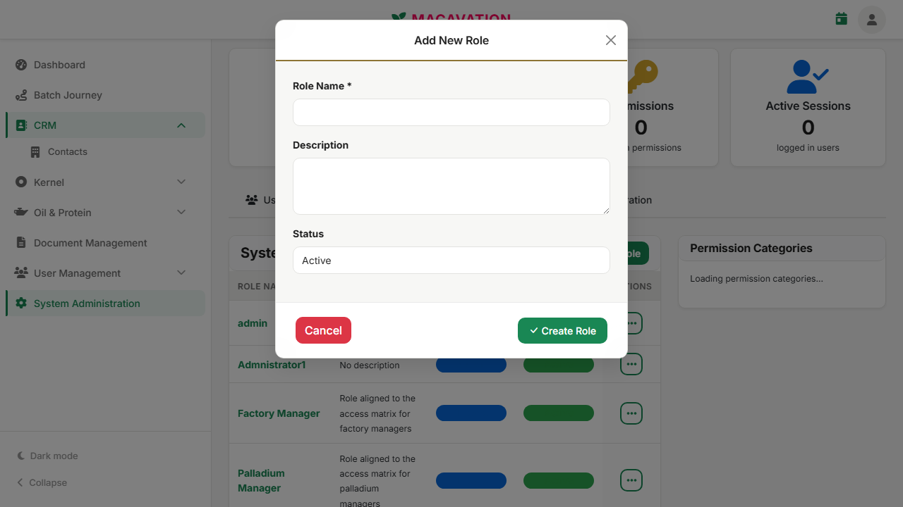
Admin Add User (dialog)
Dialog opened from the related module. Complete required fields (marked), then save. Use Cancel or the close button to dismiss without saving.
How to use this screen
Open from User & access → People → Add user (or equivalent).
Enter name, email/username, and temporary password policy per your organisation.
Assign the primary role before saving—this controls the menu tree on first login.
Send the user your standard onboarding steps (password change, MFA if enabled).
Batch History (dialog)
Read-only history of a kernel batch: its dispatches, intake, production and end sample (QA). Opens from Production when you press a batch row or card. It has no Save button and changes nothing.
On the Production screen press a batch's row in the table, or the body of its card on the board (not a button on it). The batch number and its status show at the top.
What the tabs show
Dispatch: "Kernel dispatches (this batch)", the orders this batch went on. It opens first when the batch has orders.
Intake: the receiving checklist and the samples, in order. Production: the production days and the job card. End sample (QA): the end sample results.
A tab with nothing to show is hidden. If a tab has no data it says "No intake data for this batch", "No production or job card data for this batch" or "No end sample (QA) data for this batch".
"Cannot load batch history" means the history could not be read. Close and open it again.
Fix a mistake
History cannot be edited here. To correct a figure, open the batch in Find a batch and press Edit on the section that is wrong.
Press Close (or the cross) to leave.
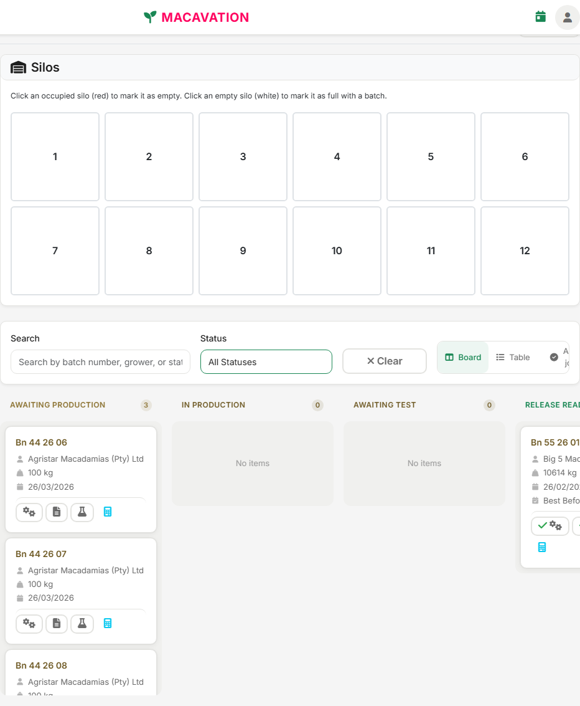
Find a batch (module)
Find any kernel or oil batch by number or grower, see its status, and open it or the screen that owns its next step. Also archive a batch or fix its details. Press a kernel batch to open its own page.
Open Find a batch from the sidebar. There are tabs for Kernel, Oil & Protein and Documents (only if your role can see documents). Use it when you know the batch number or grower but not which screen holds the batch.
Find a kernel batch
On the Kernel tab type in Search (batch or grower), pick a Status, and choose Sort by: Newest First, Oldest First, By Status, By Grower, By Weight (Heaviest) or By Moisture Level. Clear resets them. The count shows how many batches match.
The columns are Batch #, Grower, Status, Received, Weight (kg), Moisture, Total Yield (kg), then an Open button and an Actions menu.
Press Open to go to the screen that owns the batch's next step: Receiving, Production or Stock on Hand. For a batch with everything dispatched it opens the batch in Find a batch.
Press anywhere else on a row to open the batch page (see "Find a batch: the batch page").
What the statuses mean
Receiving: the receiving checklist is not done. Samples: a sample is still to take. Needs a decision: samples are in but something is out of spec, waiting for someone to release it.
Ready to crack: released to production, no production recorded yet. In production: production has started.
Awaiting lab results: production is finished but the end sample is not done. Ready for stock: production and end sample are done.
In stock: kernel is on hand. All dispatched: nothing left to send.
The Status filter also has All grower intake and All production / QA to group these.
Oil & Protein and Documents
The Oil & Protein tab lists oil production batches with Search, Status (Awaiting tests, Ready for Oil Production, In oil production, In stock, Dispatched) and Sort by. Columns: Batch #, Supplier, Status, Production date, Total oil (L). The supplier link View ingredients shows the raw material batches used. The Actions menu has the next-step screen, Edit batch details and History.
The Documents tab is the document list, moved here from the Support menu.
Fix a mistake
Wrong batch details:Actions › Edit batch details (kernel or oil), change them and save. For deeper changes open the batch page.
Batch should not exist:Actions › Archive and confirm "Archive kernel batch?". It leaves the active lists. Restore it from Stock › View archive. Its batch number can then be used again.
Batch in the wrong stage: a status cannot be changed here. Do the missing step on the screen Open takes you to.
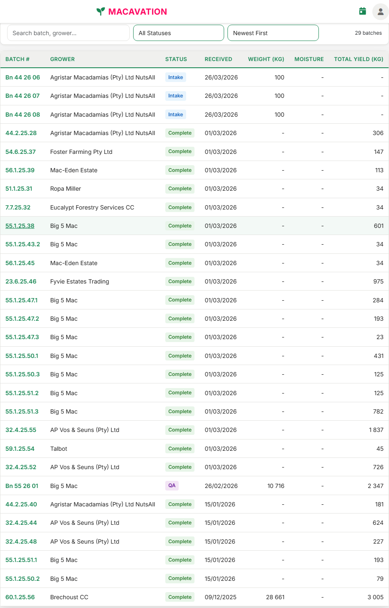
Find a batch: the batch page
Open a kernel batch from Find a batch to see all of it on one page: key figures, where it is in its journey, and one section per stage. Edit and save one section at a time, add or remove a bag, or archive the batch.
Press a row on the Kernel tab. Back to Find a batch returns to the list with your search, filter and sort as you left them. Open in (Receiving, Production or Stock on Hand) jumps to the screen that owns the next step, and Archive archives the batch. Below the batch number you see the grower, the received date and the delivery note.
What you see
Figures: Wet NIS received, Intake moisture, Cracked so far, Sound kernel packed and Dispatched, then a bar showing which stages are done.
Sections: Batch details, Delivery, Receiving, Intake samples, Production days, Job card, End sample and Dispatch.
Change something
Press Edit on the section (Add checklist or Add samples if nothing is recorded yet).
Change the values and press the Save button of that section. Only that section is saved. Cancel drops your changes.
Delivery: delivery note, consignment reference, transporter, collection points and bags. Only bags not yet placed can be re-weighed. Documents stay as they are. Needs the permission to book in deliveries.
Production days: pick a day and edit Washing or Sorting here. Cracking opens the full production sheet with Open full sheet. Without permission to edit production stages you see "Your role cannot edit production stages."
Job card: saved as a draft only. It is never approved from here.
End sample: saving asks you to confirm "Save and update stock".
Dispatch:Edit cartons changes this batch's cartons on an order that has not been dispatched. Buyer, dates and the other batches on the order are changed on Dispatch and Sales (Open Dispatch and Sales).
Fix a mistake with bags
In Edit on Delivery, press Remove beside a bag, choose why (Spilled, Wet, Damaged, Booked by mistake or Other, which needs a note) and press Remove bag. The weighed total drops by that bag. This saves straight away and is listed under Bag changes.
Press Add a bag, choose the reason (Found an extra bag, Missed at book-in or Other), type its weight in kg and press Add bag. It gets the next number and starts as Not placed yet: place it on Receiving.
A bag already cracked cannot be removed. A bag in a silo must first be undone on the Silos screen. Bags can only be changed while the batch is still in intake or production.
Batch Summary (dialog)
Totals for a kernel batch added up over all its production days: nut in shell received, kernel cracked, cracking yield, and what was washed, sorted and packed. Opens from Production, and is where you finish a batch's production.
On the Production screen open the batch's row (or card) menu and press Batch summary. It also opens with the Batch summary button inside the production days dialog.
What it shows
The batch number, its status and the grower, and how many production days are recorded.
Cards for NIS Received (kg), Kernel Cracked (kg), Cracking Yield and Total Packed (kg).
Then the totals for Cracking, Washing, Sorting and Packing, with the waste and reject lines under each.
"No production days to summarize. Add days and save data first." means nothing is recorded yet.
Finish batch production
Check the totals. The Finish batch production button shows only while the batch is not finished.
Press it and confirm "Finish batch production?" ("This will mark the batch production as complete").
You see "Production finished". Empty job card lines are filled in from the production days. Open the job card, check the quantities and press Jobcard approved before releasing to stock.
Fix a mistake
The summary only adds up what was saved, so a wrong total means a wrong day. Correct the day on Production (or with Edit on Production days in Find a batch), then open the summary again.
"Unable to load batch data. Please try again." means the figures could not be read. Close the dialog and reopen it.
CRM — Kernel customers
Kernel customers — kernel-side customers. Use filters and Add Contact to keep the list current for kernel dispatch and CRM.
Supports kernel sales and dispatch: accurate delivery contacts reduce errors on despatch documents.
How to use this screen
Open CRM — Contact Database Management from the menu.
Click the Kernel Customers tab.
Expand Filters to locate a customer before editing.
Use Add Contact or Import from Excel to keep delivery and commercial details current.
Edit from the grid as needed; updates feed through to kernel dispatch and CRM views that use these customers.
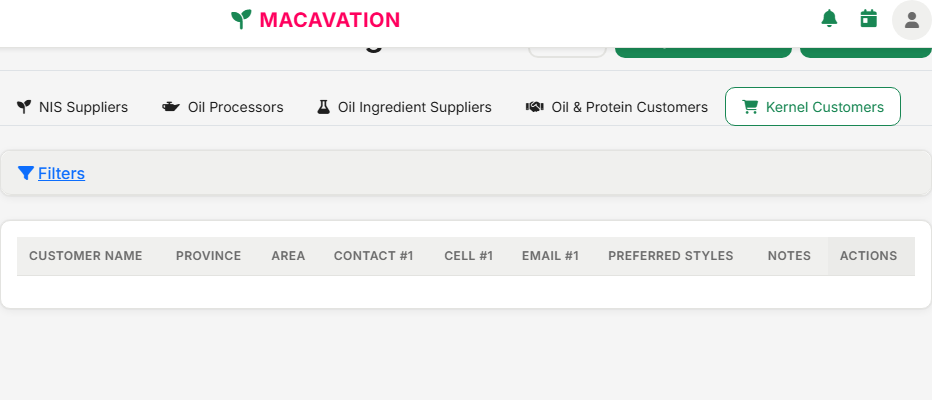
CRM — NIS suppliers
NIS suppliers — numbered grower/supplier list used with kernel intake and reporting. Import from Excel or add contacts; used across grower intake and dispatch.
Keep the numbered list aligned with operations: import from Excel when bulk-updating, or Add Contact for one-offs. These names appear in grower intake and kernel reporting.
How to use this screen
Open CRM — Contact Database Management from the menu.
Click the NIS Suppliers tab so the grid shows the numbered grower / supplier list.
Expand Filters when you need to narrow by province, status, or other fields on that tab.
Use Add Contact for a single record, or Import from Excel for bulk updates — keep the template column headers unchanged.
Open a row to edit; saved details are used in grower intake, kernel reporting, and kernel dispatch wherever that supplier appears.
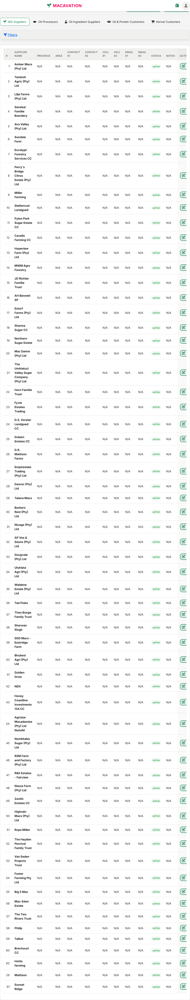
CRM — Oil & protein customers
Oil & protein customers — buyers for oil/protein products. Maintain names, contacts, and status for sales and dispatch.
Keep commercial contacts current for sales and dispatch paperwork. Status and emails should match what dispatch and account teams use offline.
How to use this screen
Open CRM — Contact Database Management from the menu.
Click the Oil & Protein Customers tab.
Expand Filters to narrow buyers or commercial contacts.
Use Add Contact or Import from Excel to add or refresh customer records.
Open a row to edit; accurate names and contacts reduce errors on oil & protein sales and dispatch paperwork.
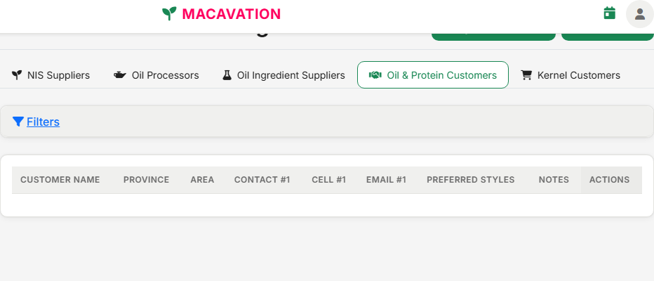
CRM — Oil ingredient suppliers
Oil ingredient suppliers — raw material and ingredient suppliers for oil & protein operations. Same tools as other CRM tabs: filters, import, add contact.
Used for raw-material suppliers feeding oil & protein. After changes, notify planners so stock and intake expectations stay aligned.
How to use this screen
Open CRM — Contact Database Management from the menu.
Click the Oil Ingredient Suppliers tab.
Expand Filters to find raw-material or ingredient suppliers quickly.
Use Add Contact or Import from Excel to maintain the list.
Edit a row to update supplier data used by oil & protein intake, stock, and production screens that reference these contacts.
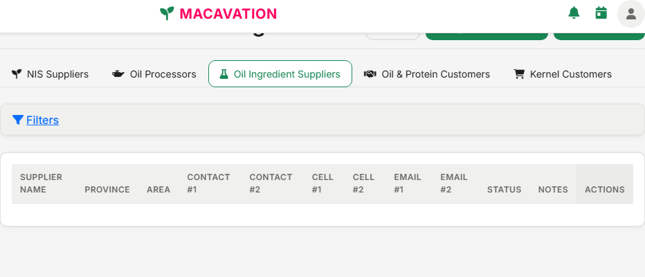
CRM — Oil processors
Oil processors — organisations classified as oil processors. Filter the grid, export, and add or edit contacts for the oil stream.
Maintain processor details for the oil stream; filters and export help audits. Edits apply wherever that contact is picked (intake, production, dispatch).
How to use this screen
Open CRM — Contact Database Management from the menu.
Click the Oil Processors tab.
Expand Filters to narrow the list before you add or edit records.
Use Add Contact or Import from Excel as appropriate; do not alter import template headers.
Open a row to edit processor details; changes apply anywhere oil processors are selected in the oil & protein stream.
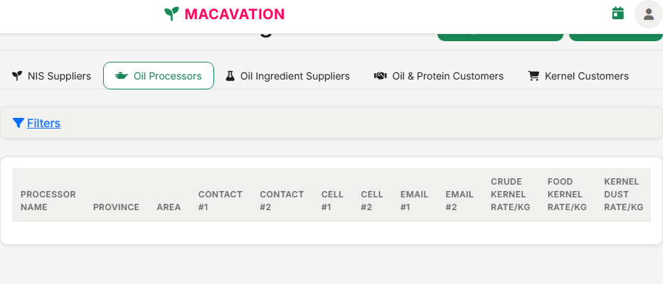
Crm Contact (dialog)
Dialog opened from the related module. Complete required fields (marked), then save. Use Cancel or the close button to dismiss without saving.
How to use this screen
Open from CRM: Add contact or when editing an existing row.
Pick or confirm the contact type tab context (NIS supplier, oil customer, etc.) so the record lands in the right list.
Complete identity fields, phones, emails, and addresses as your dispatch and finance teams expect.
Save; the grid refreshes and downstream modules (intake, dispatch) can pick up the contact immediately.
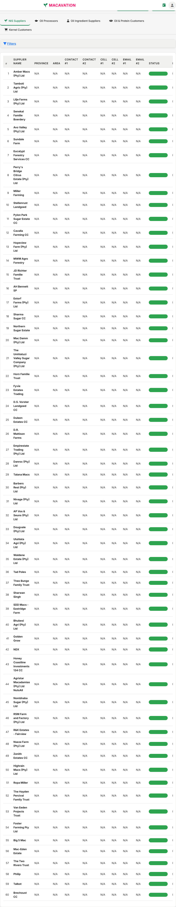
Dashboard overview
Default operations dashboard: kernel production stats, packing, and task lists. Use the sidebar to open other modules.
Use cards and lists as a daily snapshot; follow links or the sidebar to open the full grids behind each metric. Refresh the page if numbers look stale.
How to use this screen
Open Dashboard overview from the sidebar, or land here by default after sign-in if your site is configured that way.
Read the summary cards (users, roles, production, packing, tasks—depending on what your build shows) for a snapshot of the day.
Click any card or embedded link that opens a drill-down grid or module; use the sidebar for everything else.
If figures look stale compared to the shop floor, refresh the browser page once before raising a support issue.
Targets (module)
Set the numbers the business is aiming at, one per metric per period. This screen replaced the two older ones, Dashboard Targets and Report Targets, which kept separate lists that could disagree with each other.
Targets are laid out as a grid: metrics down the side, periods across the top, one financial year (April to March) at a time. The faint number under each target is the same period a year earlier, so you are aiming at something rather than guessing.
How to use this screen
Pick the financial year, and choose Monthly or Weekly. Weekly shows thirteen weeks at a time — use the arrows to move through the year.
Click a cell and type the target. It saves when you press Enter or click away.
Use fill right on a row to copy the first value across the rest of the year. It only fills periods that are still empty, so it never overwrites a number you set on purpose.
The faint figure underneath is last year. Where it is dashed, nothing was ever recorded — click it to type the figure in. Where it shows a padlock it came from a published report and cannot be changed here.
The Performance section (recovery, yield, quality) takes targets like any other, but never appears on a report sent to a customer.
Download the right template, fill without altering column headers, upload, and read the import log. Fix the spreadsheet rather than re-importing the same errors.
How to use this screen
Open Data import (Excel) from the menu.
Click Download template when you need the correct column layout for your target table.
Choose the Excel file, pick the target table (contacts, stock_items, oil_production_sheets, etc.), then click Preview.
In Map columns, match each spreadsheet column to the database field; fix the file if a column cannot map cleanly.
Review the preview row count, then click Import; read any log or error output and correct the sheet rather than re-uploading the same mistakes.
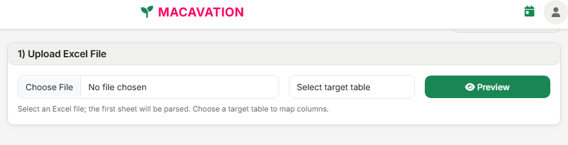
Document Management (module)
Store and organise operational documents linked to the business.
Upload with clear titles and categories; link to entities when offered so colleagues find files from batches or contacts later.
How to use this screen
Open Document management from the menu.
Maintain Categories first if your process needs new filing buckets—deleting a category hides it from pickers but keeps existing file links.
Click Upload document, pick a file, set title/category, and link to an entity if the form offers it.
Use the search box to find documents by name or category; clear the search to see the full list.
Use row actions to download, replace metadata, or remove files according to your retention rules.
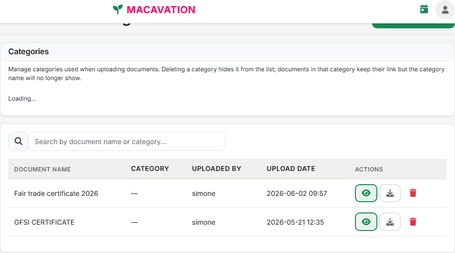
End Sample (dialog)
Dialog opened from the related module. Complete required fields (marked), then save. Use Cancel or the close button to dismiss without saving.
How to use this screen
Open from grower or QA flows when closing out a sample workflow.
Record final disposition and any retest requirement.
End Sample View (dialog)
Dialog opened from the related module. Complete required fields (marked), then save. Use Cancel or the close button to dismiss without saving.
How to use this screen
Open for read-only review of how a sample was closed.
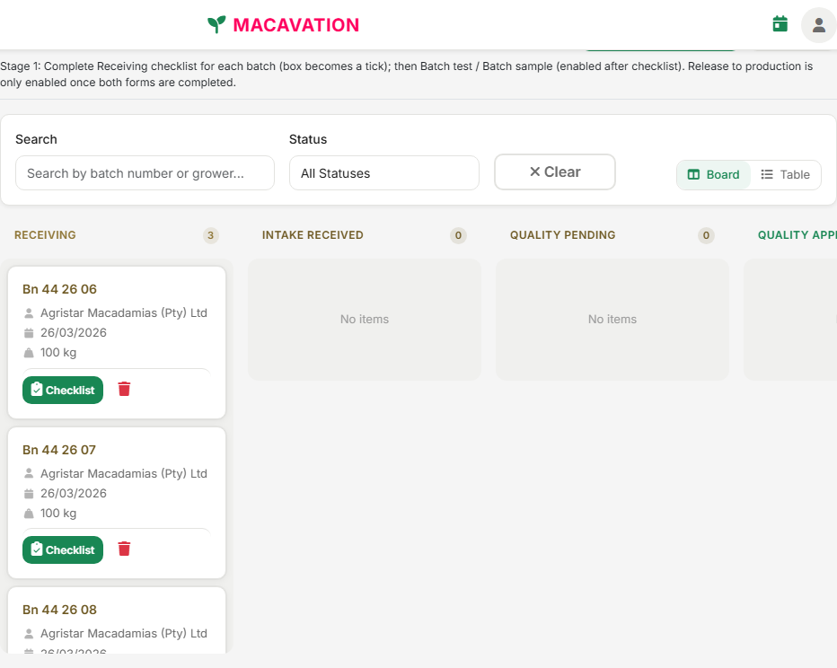
Executive dashboard & reporting
KPIs and reporting for leadership. Use Customize to choose visible widgets and Generate Report for PDF output.
Choose widgets with Customize, export PDFs with Generate Report, and treat figures as summaries—drill into Kernel / Oil & protein modules for detail.
How to use this screen
Open Executive dashboard from the menu.
Click Customize (or equivalent) to choose which KPI widgets and charts appear.
Use Generate report or export controls when you need a PDF or file for meetings.
Treat numbers as summaries—open Kernel or Oil & protein modules for line-level detail when something needs investigation.
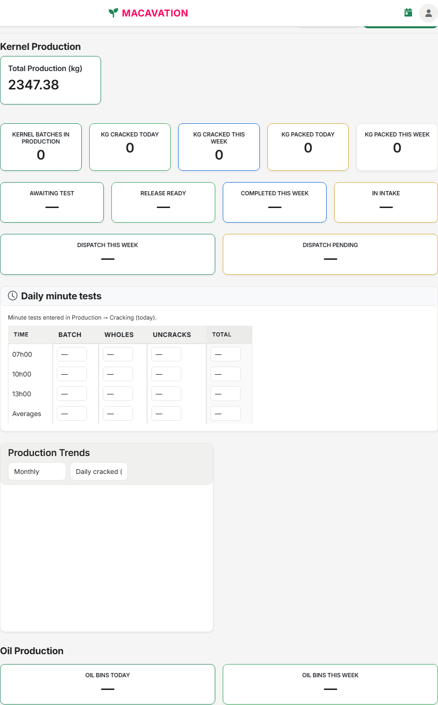
Feature (dialog)
Dialog opened from the related module. Complete required fields (marked), then save. Use Cancel or the close button to dismiss without saving.
How to use this screen
Open from Features grid to define or edit a feature key and description.
Use stable keys—changing keys later breaks role assignments.
Features (module)
Catalogue of application features for assignment to roles.
Treat as the catalogue of toggles—actual access still requires role assignment and menu configuration.
How to use this screen
Open Features from the same sidebar group as User & access when your role includes the catalogue route.
Search by name, key, or description; filter by active/inactive; click Clear to reset.
Use Add feature to register a new application feature key for role assignment.
Use Refresh and Export when auditing which flags exist before a rollout.
Actual user access still requires that feature to be turned on for a role in Role features.
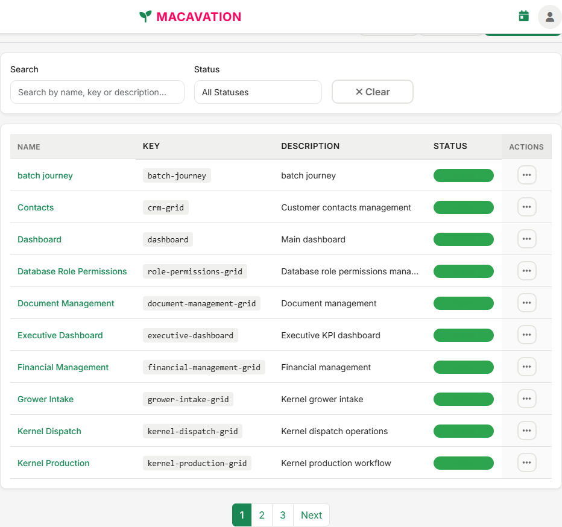
Financial Management (module)
Financial views and calculations supporting operations (where enabled).
Use for enabled financial snapshots; always reconcile with your authoritative ledger—this view supports operations, not statutory reporting.
How to use this screen
Open Financial management when your deployment enables it.
Click New invoice or Record payment from the toolbar to add transactions.
Review the grid columns (document number, type, contact, amount, date, status) before posting.
Use row Actions to open, edit, or void per your business rules.
Use Export for finance hand-off; reconcile against your ledger—this screen supports operations, not statutory reporting on its own.
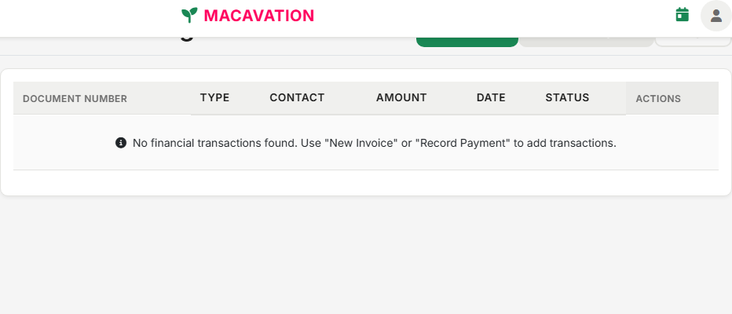
Book in a truck (dialog)
Book in a delivery of nut in shell: choose the supplier, enter the supplier's declared weight and the bags, add the transport details and save. Opens from Receiving with + Book in a truck, or with Book in on an expected truck.
Fill it in
Batch details. Set Date Received and the Supplier. Booking in from an expected truck fills these in. The + next to Supplier adds a new one: Company name and a Supplier code from 0 to 99 are required, and the code must be different for each supplier because it goes into the batch number. Then press Add supplier.
Batch Number is suggested for you. Refresh suggested works it out again. If your role is not allowed to change it, the box is locked. Use a number that no other batch has.
Supplier's declared weight (kg) is what the supplier says they sent.
Bags. Every bag is one row with its Weight (Kg). Press + Add for more rows (the box next to it says how many, up to 500) and the cross at the end of a row to remove that bag. The footer shows the weighed total and bag count. One bag is one pallet. If the weighed total differs from the declared weight you see how many kg less or more. Both figures are kept and you can still save.
If bags are weighed at the silo (a setting in Kernel Pipeline Settings), a Number of bags box appears with a button like "Add 32 bags at 937.50 kg each". Bags you do not weigh get the average (declared weight divided by bag count) and are marked est. Type a weight in a row and it counts as weighed.
Transport. Choose the Transporter (or + Add transport company), type the Delivery Note Reference from the transporter's paperwork, choose the Transport Type, and add the Consignment Reference from the supplier's delivery note if there is one. You do not enter the transport rate here: saving sends a task to My Day for the roles that enter it.
Collection Point(s): tick one or more of the supplier's addresses from CRM. Supporting Documents: attach the delivery note, proof of delivery and so on.
Where did the bags go? Choose the storage area. If part went elsewhere, press + Some bags went somewhere else, choose the area and how many of the last bags. This is optional. Bags with no area show as Not placed yet on Receiving and can be moved later.
Press Save delivery. A truck from the plan then shows as Received on the plan with its real kg, and its "Truck due today" task closes.
If it will not save
A box "Please check the delivery" lists what is missing: Date Received, Supplier, Batch Number, at least one bag with a weight above 0, Delivery Note Reference, a Transporter, a Transport Type. It also says if documents are still uploading, or if the second area is the same as the first.
"Batch created, delivery details not saved" means the batch exists but the bag weights, transport, collection points or documents did not save. Open the batch in Find a batch and add them again with Edit on Delivery.
Fix a mistake
Before saving: change any box, or press Cancel to leave without saving.
After saving: this form cannot be reopened. Change the supplier, date, batch number, weights or transport with Edit on Find a batch. A batch booked in by mistake can be archived from Receiving.
Receiving (module)
Book in a delivery truck, do its receiving checklist and its two samples, and send it on to be cracked. Also shows the trucks expected from the procurement plan, and how to fix a mistake: edit the checklist or a sample, release by hand, or archive a batch.
Open Kernel pipeline › 1. Receiving from the sidebar. At the top are Procurement plan, the intake calendar, + Book in a truck and an export button. Below are the search bar, the Expected trucks line and the batches, as a Board or a Table. The bags and the Storage areas list are in the next part of this guide.
Book in a truck
If the truck is on the procurement plan, open Expected trucks (press Show) and press Book in on its card. You can also drag the card by its grip handle onto the Receiving column. The delivery form opens with the supplier, date and weight filled in. A truck due tomorrow has no Book in button yet.
For a truck that is not on the plan, press + Book in a truck and fill in the form yourself. See the Book in a truck dialog in this guide.
Press Save delivery. The batch appears in the Receiving column. If you see "You do not have permission to create kernel intake batches", your role cannot book in trucks.
Take a batch through the board
Receiving: the receiving checklist is not done yet. Press Checklist on the card (Receiving checklist in the table).
Samples: the checklist is done, a sample is still to take. Press Take sample and save both the ziplock and the 5kg sample.
Needs a decision: both samples are saved but something is out of spec, or the checklist says the vehicle was not clean or pests were found. The batch waits here until a person looks at it and presses Release.
Ready to crack: the batch has gone to production and its bags are waiting in storage or a silo. A batch whose checks are all fine moves here by itself as soon as the last sample is saved. Put its bags into a silo on Silo Holding.
To release by hand, press Release on the card (in the table: the Actions menu › Release to production, greyed out until the checklist and samples are done). A box shows the weighed total; press Release to confirm. Dragging a card forward only opens the checklist or sample dialog. Cards cannot be dragged backwards.
Expected trucks
The line reads like "2 late, 1 today, 5 in the next 7 days". Press Show for one card per late, today and tomorrow truck. A card says "not confirmed" until the plan marks it confirmed.
A truck up to 14 days late shows Late. Older ones are not listed; the link "never booked in" takes you to the Procurement plan to sort them out.
On a late truck, people who can edit the plan also see Edit (opens the truck in the Procurement plan) and Cancel (asks "Cancel this truck?"; press Cancel truck, or Keep it).
The Procurement plan button shows how many trucks are due this week. An amber dot means the next 7 days of the plan take stock under 100 t.
Fix a mistake
Wrong checklist answer: press Edit in the table's Actions menu (or the batch number), change the answer and press Save Receiving Checklist. Until the batch is released, saving re-checks it.
Wrong sample result: press the tick button on the card (Batch sample in the table), fix the figure and press Save sample. Until the batch is released, this re-checks it too.
Wrong supplier, date, batch number, delivery note or bag weight: these cannot be changed here after saving. Open Find a batch, open the batch, and press Edit on Batch details or Delivery.
Released by mistake: this screen has no button to undo a release.
Batch booked in by mistake: press the archive button on the card (table: Actions › Archive batch) and confirm "Archive kernel batch?". It leaves the intake and production lists and can be restored from Stock › View archive. Once a batch is Ready to crack, its card has no archive button here. Use Archive on Find a batch.
Finding things
Search by batch number or grower. Status offers Receiving, Samples, Needs a decision and Ready to crack. Clear resets both.
In the Table, the arrow on the weight heading switches between Supplier's declared, Weighed total and Both.
The calendar button shades the days batches were received. Press a day to see which batches came in, from which grower, and where each is now. The download button exports the batches.
Receiving: bags and storage areas
See where every bag of a delivery is and move bags between storage areas on the Receiving screen. Covers the Bags button, picking bags, Move and Undo, the Storage areas list, the weighed-or-estimated check and Recent moves.
Every delivery is a set of numbered bags (one pallet each). A bag is in a storage area, in a silo, cracked, or Not placed yet. Silo and cracked are set on the Silos screen and can only be seen here.
See the bags of a batch
Press Bags on a card (or the arrow at the start of a table row). Press Hide bags to close it.
The chips at the top count the bags per place, for example "Not placed yet: 12". Each square is one bag with its number and a letter or icon for where it is. Hold the pointer over a square to see its place and kg. A bag marked estimated has not been weighed yet.
When some bags are estimated, or were weighed at the silo, a check shows how many bags are weighed, the kg weighed at intake, the kg weighed at the silo, the kg still estimated, and the best figure now against what the supplier declared.
Move bags to another area
Pick the bags. Tap one bag, then another to pick everything between them. Press and hold a bag (or Ctrl-click) to add or drop just that one. Tap a place chip to pick all the bags there. Or type numbers in Bags [from] to [to].
Choose the area in Move to and press Move. If you are moving more than half the batch you are asked "Move N bags?"; press Move them.
A message says "N bags of the batch moved to the area" with an Undo button. It stays for 8 seconds.
Only people with the storage-move permission can move bags; everyone else sees "You can see where the bags are. Ask an admin for access to move them." Bags in a silo or already cracked cannot be moved here: you get "Nothing to move. Those bags are already there, or are in a silo or cracked."
Storage areas list
At the bottom of Receiving, each area shows its bags, tonnes and batches, and how full it is. Over 90% shows Full soon. The size of each area is set in Kernel Pipeline Settings › Plant. Without a size there is no bar.
Press an area to list the bags in it, with Open batch on each line.
Not placed yet has a Place them button. An area with bags has Move bags. Choose the batch, the bag numbers (for example 1 to 10) and Move to. You are told "Choose a batch", "Enter bag numbers, like 1 to 10" or "None of those bags are here" if something is missing.
In silos links to the Silos screen.
Recent moves (the last 50, newest first) shows when, Placed, Out or Moved, the batch, from where to where, the tonnes, and who did it.
Older batches with no bags recorded are not counted. A note under the list says how many.
Fix a mistake
Moved the wrong bags: press Undo in the message within 8 seconds. After that, pick the same bags and move them back.
Bag put in a silo by mistake: undo it on the Silos screen first (see Silo Holding), then move or remove it.
A bag was spilled, or one was missed at book-in: open the batch in Find a batch, press Edit on Delivery, then Remove or Add a bag and give the reason. A bag already cracked cannot be removed.
Procurement plan
Plan the trucks of nut in shell coming from growers against what cracking uses, and see when stock will run out. Plan a delivery, mark it confirmed, move or cancel it, book it in, and set days off or shutdowns.
Open Kernel pipeline › Procurement plan, or press Procurement plan on Receiving. Planners edit the plan. Everyone else can look but not change it. Book in shows only to people who may book in trucks. Every change is logged with who made it. Back to Receiving goes back.
Reading the screen
Tiles:Nut in shell on hand, Still to come (trucks and tonnes), Stock runs out (it warns when this is inside 30 days) and Cracking uses (kg per day).
Late trucks show a banner: book the truck in if it arrived, or move it.
Trucks this week and next lists each truck with its status: Planned, Confirmed, Late, or Received (the real weighed kg replace the planned kg).
Stock on hand through the season is a chart of planned stock with a dot for each truck and a low-stock line at 100 t. Choose 3 months, 6 months, Year or All.
Below it choose the view (Day, Week, Month, Year), a Storage area, and the rate for the forecast: Planned rate or Actual average (greyed out until enough cracking is recorded). The month calendar shows the stock at the start of each day.
Plan a delivery
Press + Plan a delivery. A panel opens.
Choose the Grower (or type a name if it is not listed). Truck name is numbered for you. Set Planned date and Planned weight (kg) (it starts at 30,000).
For regular trucks set Repeat to Every week or Every 2 weeks and How many more (1 to 52).
Choose where it Goes into, set Status to Planned or Confirmed, add a Note and press Save. You see "Delivery planned."
You are told "Choose a grower", "Choose the planned date" or "Enter the planned weight in kg" if something is missing.
Day to day
Mark confirmed: on a planned truck that is not due yet. You see "Truck confirmed."
Book in: on a truck due today or late. It opens Receiving with the book-in form. When the truck is saved there, the plan shows it as Received.
Set a day: press Working days, or press a day on the month calendar. Choose From date and an optional To date for a range, then a Day type: Cracking day, Half day, Off, No cracking, Shutdown, Public holiday or Back to normal. Type Kg cracked only to override the daily rate. Press Save day.
Plan settings: at the bottom of the same panel (press it to open). Set Planned kg per day (1 to 100,000) and the Opening stock: use the system's stock, or your own count with Kg counted and Counted on. Press Save settings.
Fix a mistake
Wrong date, weight, grower or area: press Edit on the truck (or Move date in the late banner), change it and press Save ("Truck updated.").
Truck not coming: in Edit truck press Cancel this truck and confirm ("It comes off the calendar."; Keep it backs out). Only a planned truck that has not been received can be cancelled. A received or cancelled truck can no longer be changed here.
Wrong day type: set the day again, or choose Back to normal.
Double entries and old trucks: for planners, a card lists possible doubles and old trucks never booked in, each with Cancel this truck. Late means up to 14 days past the date. Older trucks are listed here.
Batch sample (dialog)
Record the two samples taken from a delivery: the ziplock bag sample (moisture, peroxide value, free fatty acids) and the 5kg sample (crack-out, float test, unsound kernels). Opens from Receiving with Take sample, and is where a wrong result is corrected.
Open it on Receiving: press Take sample on the card (Take sample or Batch sample in the table). The Take sample button appears once the receiving checklist is saved. The dialog always opens on the first tab. Each tab is saved on its own, and a green tick shows on a saved tab.
Ziplock bag sample
Tick each test that was done: Moisture (%), Peroxide Value (meqO2/kg), Free Fatty Acids (%). At least one must be ticked, and each ticked test needs a result.
Type the result. A note under it says In spec, Borderline or Out of spec, or No limits set. The limits come from Kernel Pipeline Settings › Intake & quality › Sample spec limits.
Press Save sample.
5kg sample
Sample Crack-Out: weigh Sound Kernel (Pre-Float Test) and Shell in grams. Unsound Kernel fills in from the breakdown below. At least one crack-out weight is required. If the total is more than 50 g from 5,000 g you get a reminder to check the weights. It never stops you saving.
Float Test: enter the wet weights of Floating Kernel and Sinking Kernel. The percentages, dry weights and water weight work themselves out. A warning appears if the total wet weight is less than the pre-float weight.
Unsound Kernel Breakdown: enter the grams for Germination, Late Stinkbug, Early Stinkbug, Dark Centre, Mould, Rotten, Immature Split, Shrivelled and Nut Borer. Sinkers are added for you.
Final Sample Results show the sound and unsound kernel yields once both float weights are in. Press Save sample.
What you type is also kept on this device every 2 minutes, so a closed window or lost connection does not lose it. It is cleared when you save.
What happens when both are saved
All fine: the batch moves to Ready to crack by itself and you see "Ready to crack". It is held back only if a result is past its green limit (above it, or below it where higher is better), or if the checklist says the vehicle was not clean or pests were found. A test with no limit set never holds a batch. Borderline (yellow) does not hold it.
Held: you see "Needs a decision" with the reasons. The batch waits under Needs a decision until someone presses Release on Receiving.
Checklist not done: "Both samples complete". The batch moves on once the receiving checklist is saved.
Fix a mistake
Reopen the dialog from the same button, change the figure and press Save sample. The saved figures are loaded back in. While the batch is not yet released, saving checks it again, so a mistyped result that held a batch can be corrected.
Once a batch is released, Receiving no longer shows its steps. Correct a sample with Edit on Intake samples in Find a batch.
Grower Receiving Checklist (dialog)
Answer the six receiving checks for a delivery truck: vehicle clean, enclosed, hazards, pests, pallets and raw materials. Opens from Receiving with Checklist, and is where a wrong answer is corrected.
Open it on Receiving: press Checklist on the card, Receiving checklist in the table, the batch number of a batch that has no checklist yet, or Edit in the table's Actions menu. The Take sample button appears once this is saved.
Fill it in
Answer Yes or No to every question. All are required: Is the vehicle clean?, Vehicle fully enclosed?, Any hazard substances noted on truck?, Any signs of pest infestations?, Pallets received are in good condition, Are raw materials received in good condition?
A bad answer opens a box: "What was wrong and what action was taken?". Bad means No to clean, enclosed, pallets and raw materials, and Yes to hazards and pests. The comment is required. You can add photos.
Use Comments/Actions taken for anything else.
Press Save Receiving Checklist. You see "Receiving checklist saved." and the card moves on to Samples.
Only two answers raise an alert and hold the batch for a decision: the vehicle is not clean, or pests were found. The other checks still ask what action was taken. Bag weights and the delivery note are entered when the truck is booked in, not here.
If it will not save
The yellow message lists what is missing: Answer followed by the question, or Add a comment for the question.
"Wait for the photo uploads to finish": a photo is still uploading.
Fix a mistake
Reopen the checklist from the same place, change the answer (and its comment) and save again. The saved answers are loaded back in.
Until the batch is released, saving checks it again. A truck wrongly marked not clean or with pests can be put right, and a held batch moves on if everything else is in spec.
Once the batch is released, Receiving no longer shows its steps. Use Edit on Receiving in Find a batch.
Import Oil Lots (dialog)
Dialog opened from the related module. Complete required fields (marked), then save. Use Cancel or the close button to dismiss without saving.
How to use this screen
Open from stock when importing oil lots from Excel.
Use the template your admin provided; do not rename columns.
Preview and confirm row counts before committing.
Job Card View (dialog)
This read-only job card view is no longer used. To see or change a job card, use the Job card dialog on the Production screen.
I searched the whole portal for anything that opens this dialog. The Production screen still has an empty place for it, but no button or menu calls it. The same details are now in the Job card dialog, opened from More (Board) or the row's Actions menu (Table) on Kernel pipeline › 3. Production. The Batch Journey screen also shows a job card view of its own.
Dispatch and Sales (dialog)
This old read-only dispatch order box is no longer used. To see a dispatch use View sheet on the Dispatch and Sales screen, and for its pricing use the step boxes.
I searched the whole portal for anything that opens this dialog. Its function for showing an order is never called, and the Dispatch and Sales screen now shows View sheet instead, which opens the truck sheet (see Truck loaded dialog). Pricing and picking are in the dispatch dialog opened from the amber step box. Both are on Kernel pipeline › 5. Dispatch and Sales.
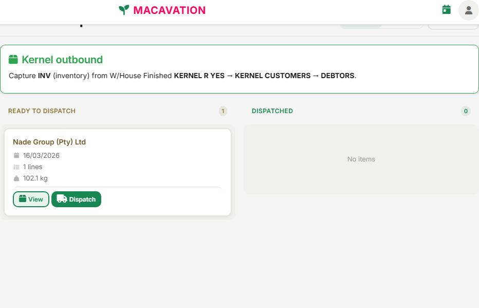
Dispatch and Sales (module)
Follow every kernel dispatch through five steps: dispatch created, stock picked, pricing confirmed, truck loaded and invoice sent. Start a dispatch, see who it is waiting on, and fix a mistake by editing it or undoing a step.
Open Kernel pipeline › 5. Dispatch and Sales. Open dispatches lists every dispatch until its invoice is sent; Dispatched and invoiced below it lists the finished ones. Each row has five boxes: a green tick is done, an amber box is the step it is on now, and a grey box is still to come. Waiting on says who has to act next. Board and Table switch the layout; Refresh reloads.
The five steps
Dispatch created: press Send to Dispatch (see Send to Dispatch dialog).
Stock picked: the Production Manager presses Confirm picking and confirms the cartons found on the shelf.
Pricing confirmed: the Sales Exec presses Confirm pricing. After that the button reads View pricing.
Truck loaded: in the row's Actions menu press Truck loaded and complete the truck sheet. It will not open until picking and pricing are confirmed ("Not ready for the truck").
Invoice sent: the Palladium Manager presses Invoice sent and enters the PO and invoice numbers.
Press an amber box to do that step. If your role may not do it, a message says who it is waiting on. Press a green tick to see what happened and press Open full details (or Open the truck sheet for step 4).
Fix a mistake
Wrong buyer, collection date or cartons, truck not loaded yet: in Actions press Edit. A dispatch that has gone out cannot be edited.
Picked wrongly: the pricing dialog has Send back to Thando, which asks you to say what needs another look and puts the dispatch back to picking.
Wrong prices or transport cost: open View pricing or Confirm pricing and press Update pricing. This works until the truck is loaded.
Truck loaded by mistake: press Undo truck loaded and confirm "Yes, unlock for editing". The saved truck paperwork, the dispatched time and any invoice-sent tick are cleared and the dispatch goes back to waiting for the truck. It only works on a dispatch that is marked loaded.
Invoice marked sent by mistake: on a finished dispatch press Undo invoice sent. Step 5 goes back to waiting and the invoice task opens again.
Stock was wrong: in Edit use Send back to stock on the line.
Finding things
Search (buyer, grower, batch; the list filters as you type), Supplier received date, and Clear.
The chips above the list filter by stage with a count: All, Waiting for picking, Waiting for pricing, Waiting for the truck, Waiting for the invoice, Done and Older orders. Older orders went out before the five steps began and show "Older order" instead of boxes.
Dispatch Calendar shows days with baskets created or dispatched, the buyer and the kg.
View sheet in Actions opens the truck sheet for that dispatch.
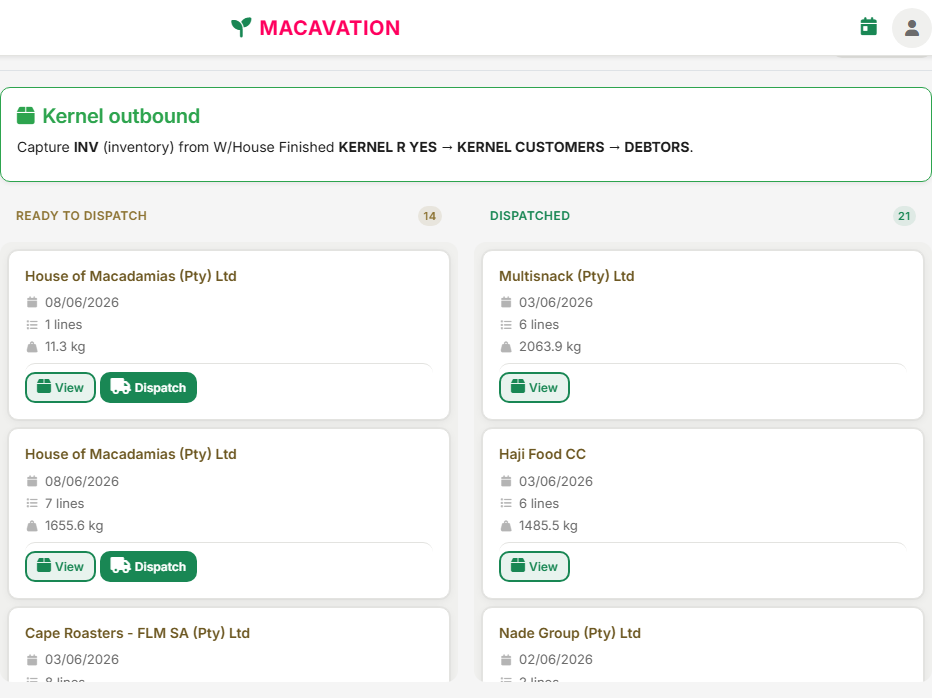
Dispatch and Sales Edit (dialog)
Change a dispatch before the truck is loaded: the buyer, the collection date, the best before date and the cartons on each line. Send a line back to stock, or cancel the whole dispatch by sending back its last line.
Open it on Kernel pipeline › 5. Dispatch and Sales: press Edit in the row's Actions menu (or the Edit button on a Board card). The dialog is titled Edit dispatch order. It is only for dispatches that have not gone out.
Change a dispatch
Change the Buyer. It cannot be empty ("Buyer is required").
Change the Planned Collection Date. A dispatch that already has one cannot have it removed ("Choose a planned collection date").
Change Best before if needed.
In the lines table (Batch, Style, Cartons) type the new Cartons for each line.
Press Save changes. "Dispatch order updated." means it worked. Cancel closes without saving.
Fix a mistake
Line should not be on this dispatch: press Send back to stock on the line and confirm "Yes, send back to stock". The cartons go back to Stock on Hand immediately; they do not wait for Save changes. The button only shows if your role may edit dispatches.
Sending back the only remaining line cancels the whole dispatch and it leaves the list.
Send back reloads the dialog: any buyer, date or carton changes you have not saved are lost, so press Save changes first.
"This order has already been dispatched": the truck is loaded. On the Dispatch and Sales screen press Undo truck loaded first, then edit or send a line back.
"This order changed while the window was open": someone else changed it. Close the dialog, reopen it and try again.
"This order was cancelled": its last line already went back to stock, so there is nothing to edit.
Dispatch and Sales Form (dialog)
The truck sheet, step 4 of a dispatch: check the vehicle, record the driver, transport company, delivery note and signature, and save "truck loaded". Once saved it is read-only, with an Edit button if it was recorded by mistake.
Open it on Kernel pipeline › 5. Dispatch and Sales with Truck loaded in the row's Actions menu, the amber step 4 box, or View sheet. The title is Truck loaded: Inspection of Vehicle & Dispatch. The top shows the basket (Batch, Style, Quantity).
Complete the truck sheet
Under Inspection of Vehicle answer all six checks Yes or No: vehicle clean, vehicle fully enclosed, hazard substances on the truck, signs of pest infestations, pallets in good condition and identified, truck bin locked before departing.
A failed check (No to clean, enclosed, pallets and bin locked; Yes to hazard substances and pests) opens a box: write what was wrong and what action was taken. It is required. Add photo is optional.
Under Dispatch fill in Attention, Date dispatched, Time, Cell number, Truck Registration and Driver's Name. Attention and Dispatched to fill from the customer record when they are known.
Choose the Transport company. If it is not listed press +, type the name and press Add.
Enter the Delivery note / Invoice number and Dispatched to. Sign in Sender's Signature (Clear starts again).
Press Add images or documents for any attachments (images and PDF, up to 6 MB each). If a file is still uploading you are asked to wait.
Press Save: truck loaded. Step 4 is done and an invoice task is opened. Messages starting "Check the inspection" name what is missing.
Fix a mistake
Wrong details on a truck sheet already saved: the sheet opens read-only, titled "(dispatched)". Press Edit and confirm "Yes, unlock for editing". The saved paperwork, the dispatched time and any invoice-sent tick are cleared and the dispatch goes back to waiting for the truck. Then complete the sheet again. Use this only when the dispatch was recorded in error.
Same thing from the list:Undo truck loaded in the Actions menu does the same.
Wrong cartons or customer: they cannot be changed on this sheet. Use Edit on the Dispatch and Sales screen after unlocking.
Wrong signature: press Clear and sign again before saving.
Dispatch Approve (dialog)
Picking, pricing and invoicing for one dispatch. Confirm the cartons picked and add substitutes, confirm the prices and transport cost, or enter the PO and invoice numbers and mark the invoice as sent. Also how to send it back for another look.
Open it on Kernel pipeline › 5. Dispatch and Sales with Confirm picking, Confirm pricing, View pricing, Invoice sent or Progress in the row, or the amber step box. The title is "Dispatch to" and the customer; below it are the five steps and the collection date. What you can do depends on the step and on your role: without permission the dialog is read-only.
Step 2: confirm picking
For each line type the cartons picked: whole numbers, zero or more, never more than was asked for.
If the shelf is short, lower the line and press + Substitute. Choose a batch under Same style, or under Different style: needs Pete's OK, and type the cartons. Substitutes can only make up the cartons not found, and cannot be more than the batch has left. Remove deletes a substitute row.
Add a Note if you changed anything, then press Confirm picked. At least one line must have cartons picked. A short line flags that batch for a stock count.
Step 3: confirm pricing
Prices fill in per kg from the customer's price list ("Customer price"), or the "Standard price", or show "No price set". Every line needs a price. To change one for this dispatch only, edit it and give a reason (optional).
Under Transport choose Macavation or Customer collects for who pays. For Macavation enter the Total Cost (Excl. VAT) (or leave blank for now), the Pallets, and choose the Transporter (+ adds a new one). The VAT-inclusive cost (15% added) and Cost per pallet are worked out.
Check the Sale summary and press Confirm pricing, then confirm. The sale shows on the Kernel Dashboard straight away and the truck can be loaded. A different-style substitute is accepted at the same time.
Step 5: invoice sent
Once the truck is loaded, enter the Customer PO number and Our invoice number. Both are required.
Press Attach the PO and Attach the invoice to add a PDF or photo (up to 6 MB). Add a Note if you like.
Press Invoice sent. A file still uploading must finish first. When done, "All five steps are done."
Fix a mistake
Picking looks wrong: while pricing, press Send back to Thando, say what needs another look (required) and send. The dispatch returns to picking.
Prices wrong after confirming: press Update pricing any time before the truck is loaded.
Invoice marked sent by mistake: on the Dispatch and Sales screen use Undo invoice sent.
Kernel Job Card (dialog)
The job card for one batch: what came in, moisture, packing dates, cartons and kg per style, waste and the mass balance. Check it, press Save job card to keep a draft, and press Jobcard approved to put the cartons into stock on hand.
Open it from Kernel pipeline › 3. Production: press Approve job card on a Ready for stock card, or choose Job card in the More menu (Board) or the row's Actions menu (Table). When you press Finish batch production, empty style lines are prefilled from the production days. The dialog is titled Production Job Card.
Check and approve a job card
Check Batch Information (Batch Number, Supplier, Received Date) and Receiving. Total Weight (kg) must be above 0. Balance (kg) is the total weight minus Removed Pre-Sizer (kg). If a note says the supplier is not in the contacts list, pick the supplier yourself.
Under Moisture enter Receiving (%) and Packing (%). Removed (%) is receiving minus packing.
Under Packing set the Start Date and Completion Date. Best Before Date is worked out from the start date and you cannot type it.
In Sound Kernel and Butter Grade press Add Style for each style and enter Cartons and Weight (kg). The × button removes a row. Totals show under each table.
Check Stock on hand (from this job card). This is only a preview. Stock on hand changes after you press Jobcard approved, not before.
Enter the Waste kg (Oil Kernel, Shell Fines, Compost, Shell). Mass Balance shows In, Out (styles plus waste) and Balance (%).
Press Jobcard approved. A tick then shows on the job card button in Production, and Release to stock can be used when the batch is ready. If you do not have permission to approve, the button is greyed out.
Saving
Changes are saved as a draft about a second after you stop typing; the status at the bottom shows "Saved". A draft does not change stock.
Save job card saves it straight away. On an already approved job card it also updates the stock quantities ("Your changes were saved and stock quantities were updated").
If dates changed though nobody edited them, Check the dates appears: Keep saved dates, Use dates on screen or Cancel.
Fix a mistake
Wrong cartons or kg: open the job card, correct the row and press Save job card (or Jobcard approved again). Because stock follows the approved job card, correct it here and not in Stock on Hand.
"Approval not saved": add at least one style line with cartons or kg, then press Jobcard approved again.
"Batch not found": the batch is no longer in Production. On Stock on Hand use Send back to production, refresh Production, and open the job card again.
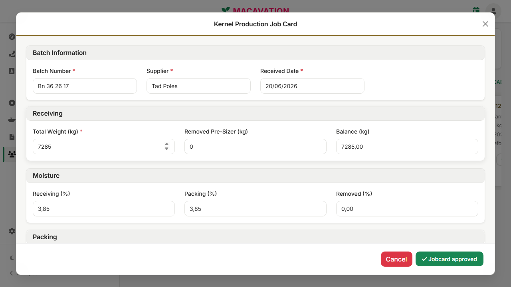
Production (module)
Start production on a received batch, record each day's cracking, washing, sorting and packing, enter the lab result, approve the job card and release the batch to stock. Also how to fix a mistake: archive a batch, send it for a retest, reprocess it, or correct its details.
Open Kernel pipeline › 3. Production from the sidebar. A batch appears here once its delivery is released to production on Receiving. The Board has four columns, left to right: Ready to crack, In production, Awaiting lab results and Ready for stock. Press Table for a list instead.
Move a batch through production
On a Ready to crack card press Start production. The Production dialog opens (see Production dialog). Once the batch has production entered, the same button reads Production.
When all production days are done, open Batch summary from More and press Finish batch production. The batch moves to Awaiting lab results.
Press End sample. After the sample goes to the lab, the card shows a line such as "Day 3 of 10 · due Fri 20 Nov" (red, with "days late", when the lab is overdue). Press Enter lab results when they come back.
A batch moves to Ready for stock once its lab results are entered on the End sample as Passed. Press Approve job card, check the quantities, and press Jobcard approved in the job card.
Press Release to stock and confirm. The stock on hand then matches the saved job card style quantities. The button only works when the job card is approved and the lab result is Passed; the grey button explains what is missing when you press it.
Lab results that do not pass
Failed a lab test: the card says "Failed a lab test" and shows Send for retest. The failed test goes back to Waiting and the day count starts again from today. Enter the retest result on the End sample.
Failed the retest: choose Reprocess and test again (the batch goes back into production with the same batch number and needs a new End sample and lab test; earlier results are kept) or Reject. Reject asks for a reason, and a rejected batch can never be released to stock.
Fix a mistake
Wrong supplier, weight or other batch detail: open More (Board) or the row's Actions menu (Table) and press Edit batch details.
Wrong production figures for a day: open the Production dialog and change that day. Changes save by themselves.
Batch should not be here: in Table view press Archive batch in the row's Actions menu and confirm "Yes, archive". It leaves the production lists and can be restored from Stock → View archive.
Batch moved too far on the Board: dragging only works forward. A batch cannot be dragged back, cannot jump from Ready to crack to Ready for stock, and cannot move to Ready for stock until its lab result is Passed.
Released to stock by mistake: this screen cannot undo a release. The job card's own message points to Send back to production on Stock on Hand.
Finding things
Search by batch number, grower or status. Status narrows to one column. Approved job cards only shows release-ready batches with an approved job card. Clear resets all three.
Production Calendar (the calendar button): days with saved production are highlighted. Press a day to see which batches were processed and whether cracking, washing, sorting or packing was done.
Sheet to finish (red button): silo runs for that batch reached the cracking log but no shell bags are entered on the cracking sheet yet. Press it to open the sheet.
Export downloads the batch list with batch number, supplier, received date, best before date, weighed total and status. A tick in the Table menu shows that step is done.
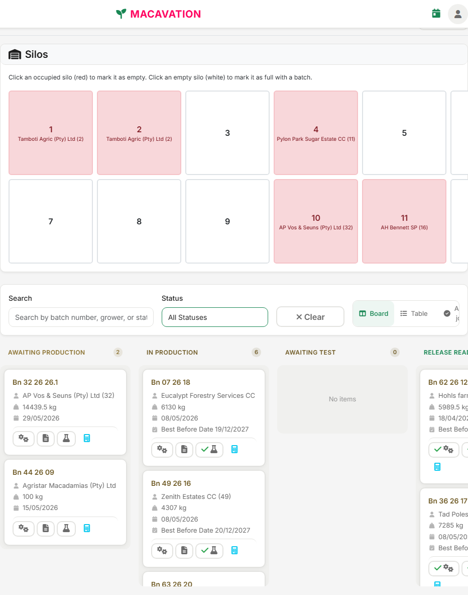
Kernel Production Forecast (module)
Record what customers are asking for, in cartons per style, and compare it with the stock on hand. Add, edit or delete a forecast line, and see at a glance which styles are short.
Open Forecasting › Kernel forecast from the sidebar. The screen has two tables: Open demand vs stock by style and Forecast lines. Stock on hand is the total released stock for that style on Stock on Hand, shared by all lines (it is not set aside for any one line). Press Refresh to reload forecasts and stock.
Add a forecast line
Press Add line. The New forecast line box opens.
Type the Customer / label and, if you want, an Order summary (for example "100 cartons style 4L").
Choose the Style: SP, 0, 1, 1S, 4L, 5, 6, 7/8, Butter High Oil or Butter Low Oil. Type the Quantity (cartons) and the Due date.
Set the Status: Open, In progress, Fulfilled or Cancelled. Add Notes if needed. Sort order is optional.
Press Save. The line appears in Forecast lines.
Read the demand table
Open forecast (ctns) adds up the lines whose status is Open or In progress, per style. Fulfilled and Cancelled lines are not counted.
Stock on hand (ctns) is the cartons in stock for that style.
Gap (open − SOH) is demand minus stock. Red means demand is higher than stock (you are short); green means you have more stock than demand. Styles with no demand and no stock are not listed.
Fix a mistake
Wrong quantity, style, date or status: open the line's Actions menu, press Edit, change it and press Save.
Order filled or called off: edit the line and set its status to Fulfilled or Cancelled. It then drops out of the open demand but stays on the list.
Line entered by mistake: press Delete in the Actions menu and confirm. A deleted line is removed from the list; there is no undo, so add it again if you need it back.
Material journey dashboard
Tracks material movement and alerts for integrator-style roles. Use Refresh to reload cards.
Reload with Refresh, then open linked modules from each card to clear alerts or continue a batch. Suited to roles watching movement across sites or stages.
How to use this screen
Open Material journey from the menu (typically used by integrator-style roles watching movement and risk).
Click Refresh to reload cards and alerts so you are not acting on cached data.
Scan each card for status, exceptions, or batches needing attention.
Use links or actions on a card to jump into the owning module (intake, production, stock, dispatch) and complete the work there.
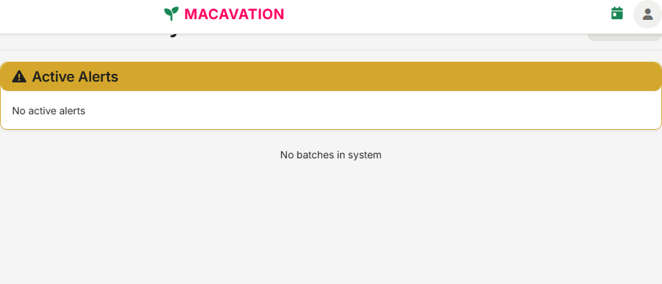
Messaging Compose (module)
Module Messaging Compose (module). Available from the navigation menu when your role includes access. The screenshot below shows the live screen layout.
Typical use: open the screen from the menu when your role allows it, narrow the list with filters, then use toolbar buttons or row actions to add, edit, export, or move work forward. The screenshot shows the usual layout.
How to use this screen
Open this module from the sidebar when your role includes access.
Use search, filters, and Clear (if shown) to find the rows you need.
Use toolbar buttons (add, export, refresh) for actions that create new records or refresh the whole list.
Use row actions or links inside each row to open detail, edit, or the next step in the workflow.
My day (module)
Role-based landing view: your assigned workflows and shortcuts. Content loads after sign-in.
Work the list top-down: each item should route you to the right module. Completing work there updates what others see on dashboards and queues.
How to use this screen
Open My Day after sign-in (or from the sidebar) to see tasks and shortcuts assigned to your role.
Work items in priority order, or pick the highest-impact line first if your team agrees that rule.
Click each task or shortcut; the app should route you to the module that owns that step.
Completing work in those modules updates dashboards and queues for everyone else.
Oil Bulk Add Stock (dialog)
Dialog opened from the related module. Complete required fields (marked), then save. Use Cancel or the close button to dismiss without saving.
How to use this screen
Open this dialog from the parent screen (toolbar, card, or row action)—not from the sidebar on its own.
Read the title and any short instructions; required fields are usually marked (e.g. with *).
Fill the form using dropdowns, dates, and lookups where offered so values match what the database expects.
Click the primary Save / Submit button to apply changes, or Cancel / close (×) to discard.
If validation errors appear, fix the highlighted fields and submit again before leaving the dialog.
Oil Dispatch (dialog)
Dialog opened from the related module. Complete required fields (marked), then save. Use Cancel or the close button to dismiss without saving.
How to use this screen
Open from Oil dispatch when creating or editing a dispatch basket header (customer, delivery window, references).
Pick oil & protein customers from CRM where the form offers a lookup—match the sold-to party on the order.
Confirm only released oil lots and finished stock lines are referenced; if something is missing, fix it in Stock management first.
Save the header before opening line inspection or dispatch forms tied to this basket.
If validation fails, read the message—usually a missing customer, date, or line mismatch.
Oil Dispatch (module)
Oil & protein dispatch: mirror of kernel dispatch for the finished oil/protein warehouse location.
Same pattern as kernel dispatch for the oil/protein warehouse: basket, checks, then shipment. Ensure oil lots are released before loading.
How to use this screen
Open Oil & protein dispatch from the menu (mirror of kernel dispatch for the finished oil/protein warehouse).
Use the same board/table pattern and refresh habit as kernel dispatch.
Build or review baskets from released oil lots; complete inspection and dispatch forms before the truck leaves.
Ensure oil lots are released and available in stock before you add them to a load.
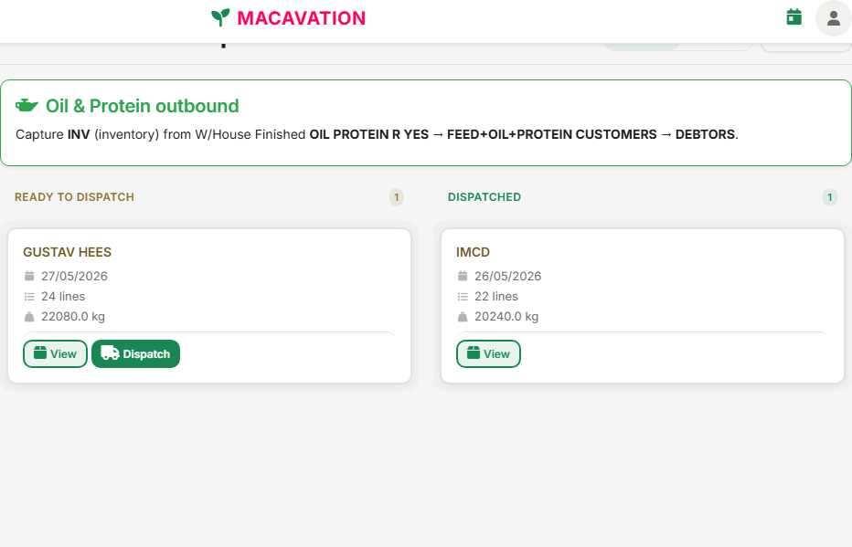
Oil Dispatch Form (dialog)
Dialog opened from the related module. Complete required fields (marked), then save. Use Cancel or the close button to dismiss without saving.
How to use this screen
Open for oil/protein inspection and despatch paperwork.
Complete checks, signatures, and transport details; submit when the load is true.
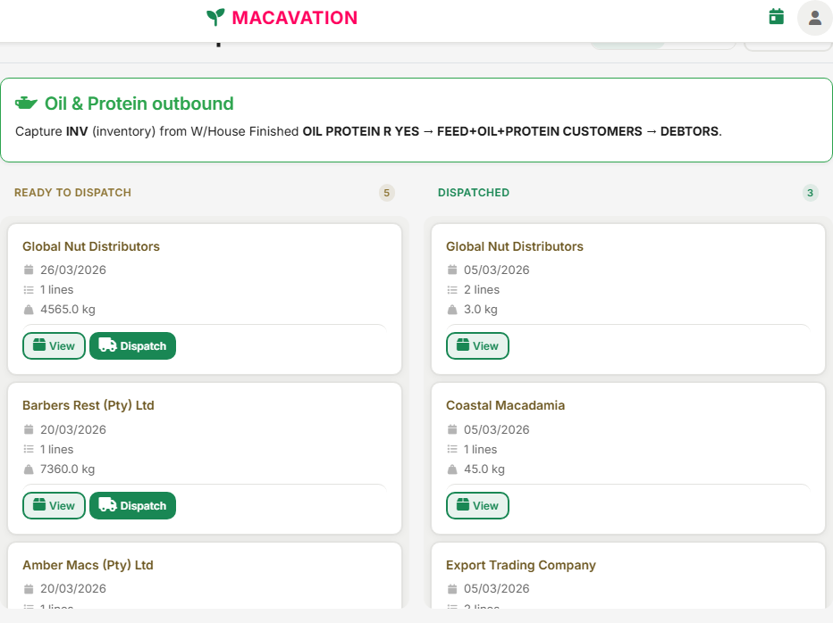
Oil Lot (dialog)
Dialog opened from the related module. Complete required fields (marked), then save. Use Cancel or the close button to dismiss without saving.
How to use this screen
Open when creating or editing an oil lot record tied to stock.
Enter best-before, quantity, and location; align with physical labels on drums or tanks.
Save before sending the lot to dispatch.
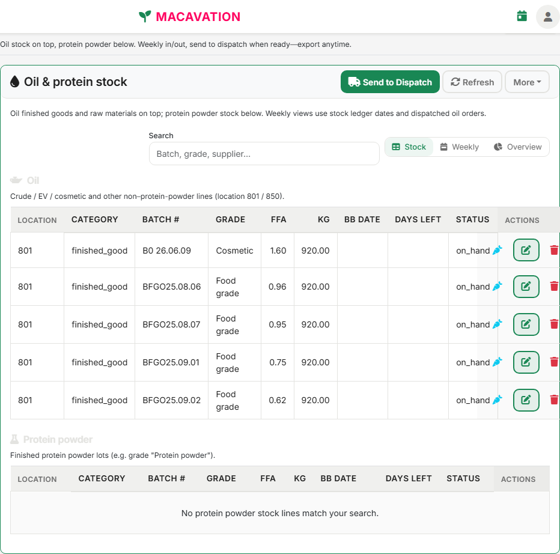
Oil Production (module)
Oil production sheets and related processing steps for the oil/protein stream.
Record production sheets and relate them to lots or batches as the UI prompts. This closes the loop between intake stock and finished oil/protein.
How to use this screen
Open Oil production from the menu.
Review Raw ingredients in production (batches released from Supplier Intake); open a batch to run extraction steps or mark a bag Empty when the press run is finished.
Expand Finished (emptied) raw batches if you need to audit what already left the active list.
Open or create a Production sheet (Food Grade Oil / Protein Powder / Cosmetic Oil) from the UI—choose form entry vs file upload if both are offered.
Use View data and Refresh on the toolbar for analytics and to reload lists after others have changed data.
Oil Production Forecast (module)
Module Oil Production Forecast (module). Available from the navigation menu when your role includes access. The screenshot below shows the live screen layout.
Typical use: open the screen from the menu when your role allows it, narrow the list with filters, then use toolbar buttons or row actions to add, edit, export, or move work forward. The screenshot shows the usual layout.
How to use this screen
Open this module from the sidebar when your role includes access.
Use search, filters, and Clear (if shown) to find the rows you need.
Use toolbar buttons (add, export, refresh) for actions that create new records or refresh the whole list.
Use row actions or links inside each row to open detail, edit, or the next step in the workflow.
Oil Production Sheet (dialog)
Dialog opened from the related module. Complete required fields (marked), then save. Use Cancel or the close button to dismiss without saving.
How to use this screen
Open from oil production when starting or editing a production sheet.
Choose Fill out the form vs Upload a file if both modes exist.
Enter yields, losses, and product splits; attach files if the run used external lab results.
Save so finished goods and stock can reflect the run.
Palladium Integration (module)
ERP integration settings and sync status with Palladium.
Check sync health and mapping; day-to-day posting still happens from operational modules according to your integration design.
How to use this screen
Open Palladium ERP integration from the menu.
Review the Sync status table: entity type, last sync, status, records synced.
Click Sync now only when your runbook allows (avoid double-runs during month-end unless approved).
Use row actions to inspect errors or retry failed entities as the UI permits.
Day-to-day operational posting still happens in Macavation modules; this screen is health and mapping for ERP bridge.
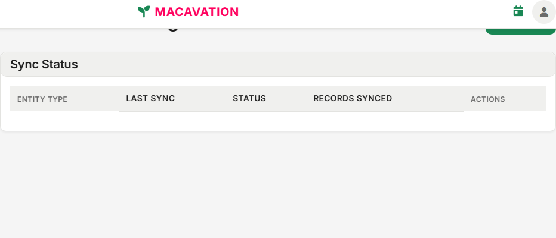
Production Stages (dialog)
Enter one production day for a batch: cracking runs and shell waste, washing, sorting and packing. Add a cracking run, fix its times, and open the Batch summary to finish the batch's production.
Open it on Kernel pipeline › 3. Production with Start production or Production on a batch card, or Production stages in the More menu. Dragging a card from Ready to crack to In production also opens it. It has four tabs: Cracking, Washing, Sorting and Packing. Each day has its own Date. Changes save by themselves; the status at the bottom shows "Saved".
Enter a day
Cracking: set the Date first (it is required). Under Cracking runs today each silo run for this batch on that day is listed with Silo, Started, Stopped, In silo at start, Left, Cracked and kg / hour. These rows come from the Silo Holding screen. Under Shell Waste enter each bag's Bag # and Quantity (kg); press + Add bag for more.
Washing: enter Crates In, Floater and Sinker crates and kg out, the three Peracetic Acid Testing times with Pass, and the Shell Fines and Compost waste. The crate and quantity differences are worked out for you.
Sorting: enter the crates and kg for each style out (0, 1, 1S, 4L, 5, 6, 7/8), the Butter Low Oil figures, and the oil and compost quantities. Where a kg per crate is set in Kernel Pipeline Settings, the kg fill in by themselves.
Packing: enter Cartons and Quantity (kg) for each Sound Kernel and Butter style, then sign in Packed by (signature). Clear redraws the signature.
When all days are done press Batch summary, check the totals, and press Finish batch production. Confirm "Finish batch production?" with Finish. The batch moves on to End sample and the job card is prefilled.
Fix a mistake
Silo run left out: press + Add cracking run. Choose the silo, the Started at and Stopped at times and the Kg left in silo (0 if empty). Stopped must be after Started, and the kg left cannot be more than the silo held. Saving empties the silo by the same amount, as if Stop cracking had been pressed. If no silo holds this batch it says to allocate the batch to a silo first.
Wrong run times: press Edit on the run, change Started at and Stopped at and press Save. The run is marked time changed. To undo a run completely use the Silo Holding screen.
Wrong figures on a day: pick that day's date and change the fields. Clearing everything on a day removes that day's production data ("Production data cleared for this day").
"Nothing to save": a date on its own does not count as production. Enter some figures first.
"Not permitted": you need permission to edit production stages. Without it the Add and Edit buttons are hidden.
Production Stages View (dialog)
This read-only view of production days is no longer used. To see or change a day's cracking, washing, sorting or packing, use the Production dialog.
I searched the whole portal for anything that opens this dialog. The Production screen has an empty place for it, and the Production dialog has a function that would fill it, but no button, menu or other code ever calls that function. Use the Production dialog (Start production or Production on a batch card) to see every day, or the Production Calendar button on Kernel pipeline › 3. Production to see which stages were done on each day.
Quality Assurance (module)
Quality tests, thresholds, and food-safety related records.
Log tests against the referenced batch or item; failed or out-of-spec results may block the next step depending on configuration—follow local QA rules.
How to use this screen
Open Quality assurance from the menu.
Use Search, Test type, Result, and Clear to find the right record.
Click New quality test to log a new sample, batch, or final-product test as your process requires.
Open a row to enter results, attachments, or sign-off; failed or conditional results may block release depending on configuration—follow your local QA playbook.
Use Export when auditors or customers need evidence outside the app.
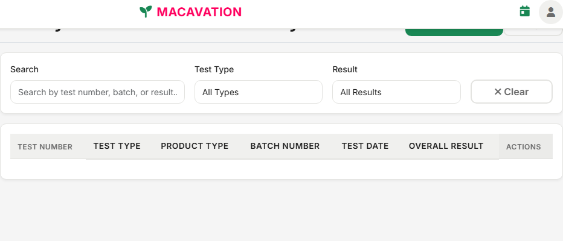
Quality Test (dialog)
Dialog opened from the related module. Complete required fields (marked), then save. Use Cancel or the close button to dismiss without saving.
How to use this screen
Open from QA grid when logging or editing a specific test result.
Choose pass/fail/conditional and attach evidence files if required.
Save; failed tests may block release depending on configuration.
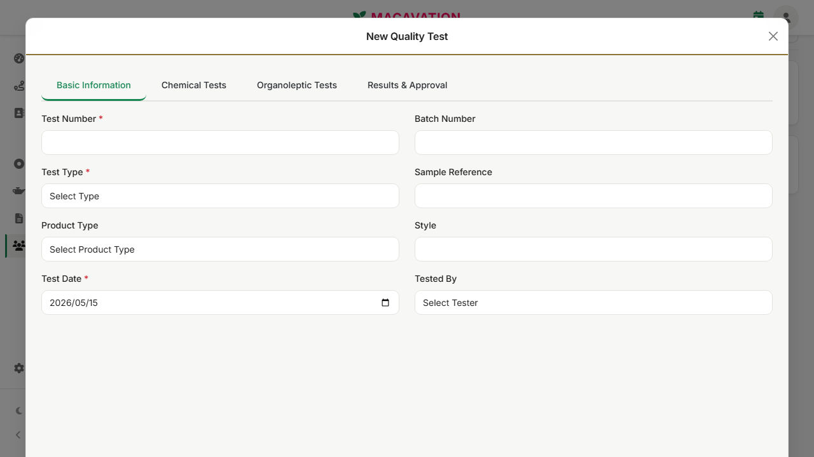
Raw Material Issued (dialog)
Dialog opened from the related module. Complete required fields (marked), then save. Use Cancel or the close button to dismiss without saving.
How to use this screen
Open when recording raw material issued to production from stock.
Link to the correct batch or job; quantities reduce raw stock when saved.
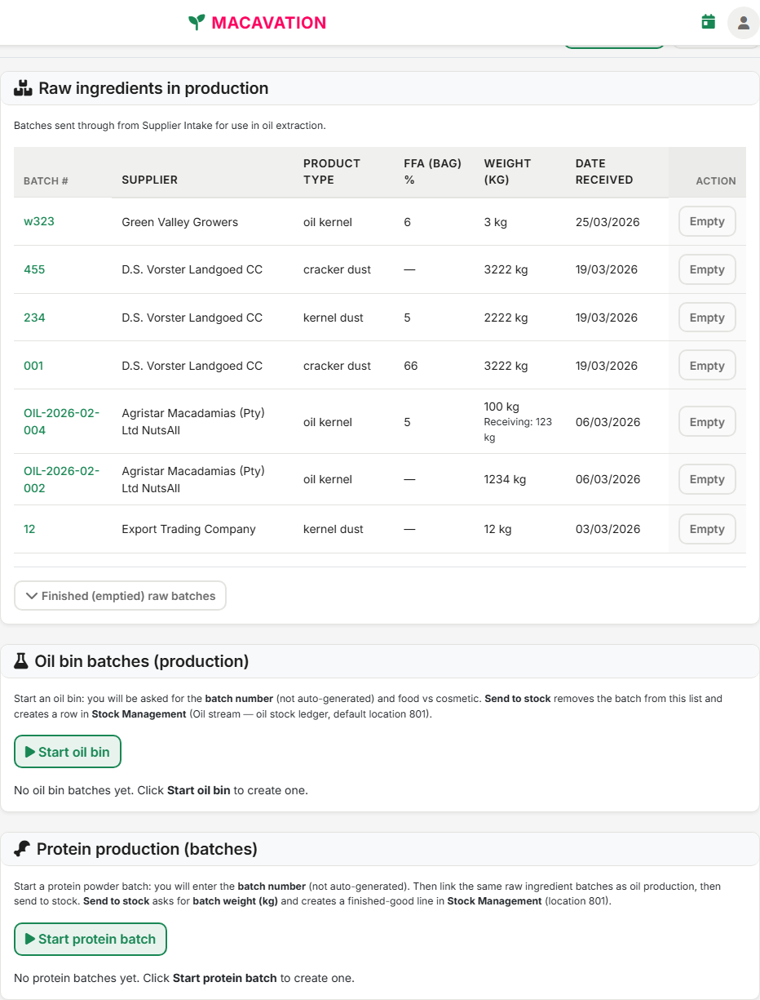
Receiving Checklist (dialog)
This older "Incoming Receiving Checklist" dialog is no longer used. Nothing in the portal opens it now.
Its page is still loaded on the oil Receiving screen, but no button or code there asks it to open. The New delivery button on oil Receiving opens the Receiver checklist dialog instead (see that dialog in this guide). For a kernel truck, use the Grower Receiving Checklist dialog on Receiving.
Role (dialog)
Dialog opened from the related module. Complete required fields (marked), then save. Use Cancel or the close button to dismiss without saving.
How to use this screen
Open from Roles grid when adding or editing a role inline.
Match naming conventions your organisation uses for SSO or audits.
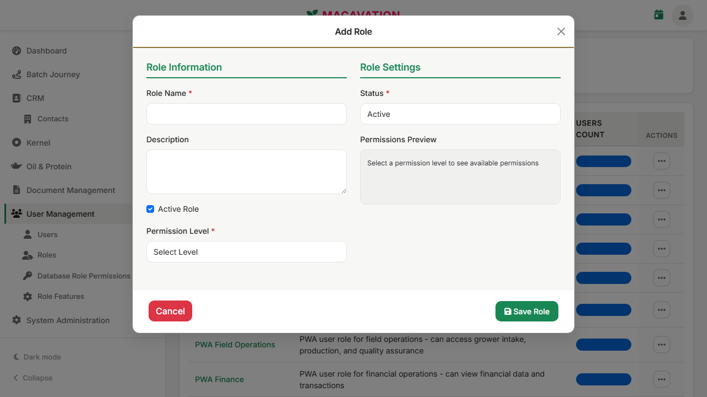
Role Feature (dialog)
Dialog opened from the related module. Complete required fields (marked), then save. Use Cancel or the close button to dismiss without saving.
How to use this screen
Open from Role features to tie a feature flag to a role.
Toggle once per combination; document the change.
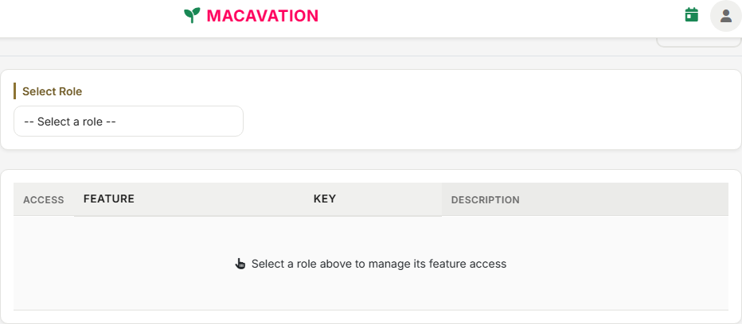
Role features (module)
Toggle feature flags per role for progressive rollout.
Toggle features per role for phased rollouts; document what each flag unlocks so support can answer user questions.
How to use this screen
Open User & access → Roles & modules and use Customize on a role (same data as the legacy Role Features grid, now alongside the per-module database permissions), or use the standalone route if still linked.
Locate the role and feature combination; toggle flags for phased rollouts of new UI or APIs.
Use export/refresh controls like other admin grids.
Document what each feature flag unlocks so support can answer “why don’t I see X?”.
Remember: users must still have the underlying role assignment and menu access—features are not a substitute for permissions.
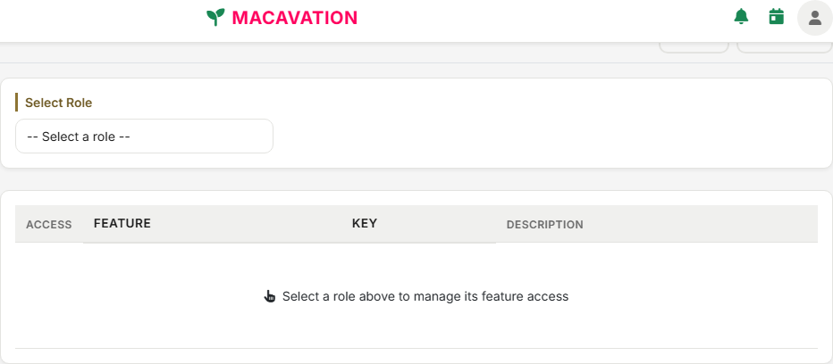
Role Permission (dialog)
Dialog opened from the related module. Complete required fields (marked), then save. Use Cancel or the close button to dismiss without saving.
How to use this screen
Open from Role permissions when mapping a role to a database object.
Pick object type, object name, and allowed operations—grant least privilege.
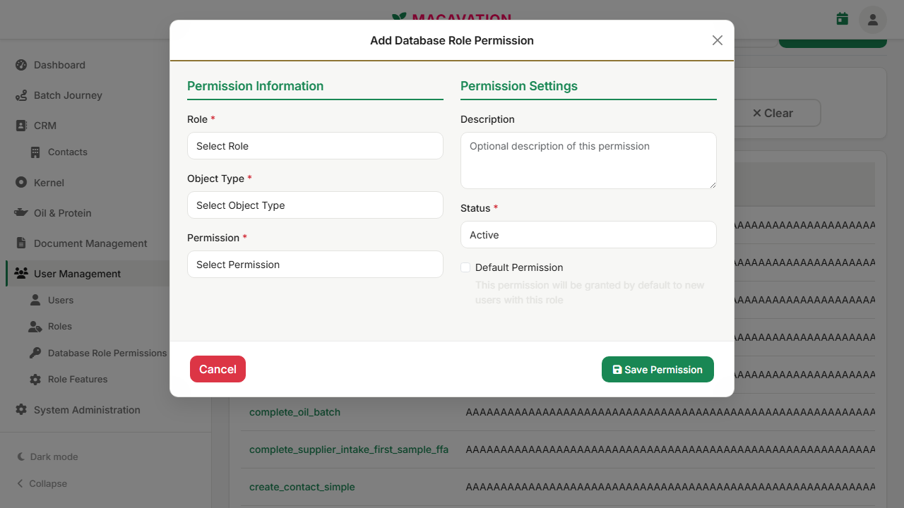
Role permissions (module)
Map roles to database permissions (functions, tables).
Grant least privilege: add permissions incrementally and test with a non-admin login before rolling out broadly.
How to use this screen
Open Role permissions from the standalone grid if exposed, or use User & access → Roles & modules → Customize on a role and expand a module.
Filter by role, object type (function/table), and operation (EXECUTE, Read, Create, Update, Delete); use Clear when needed.
Click Add permission to grant a role access to a specific object—add the minimum set first.
Use Refresh and Export when documenting access reviews.
Test with a non-admin login after changes; verify the user can do their job but cannot see restricted modules.
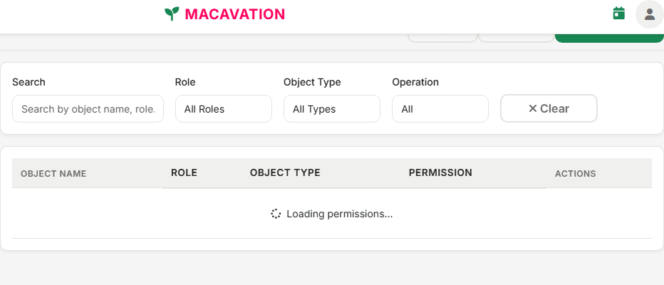
Roles (module)
Define named roles used for menu and permission assignment.
Name roles clearly for admins; after saving, assign permissions and features in their dedicated screens.
How to use this screen
Open Roles from User & access (Roles & modules tab) or use the standalone route/bookmark if your role still exposes it.
Search and filter by active/inactive; click Clear to reset the grid.
Click Add role for a new named role, or open a row to edit description and status.
Use Refresh after others change data; Export before audits.
Pair each role with entries in Role permissions and Role features so menus and APIs stay aligned.
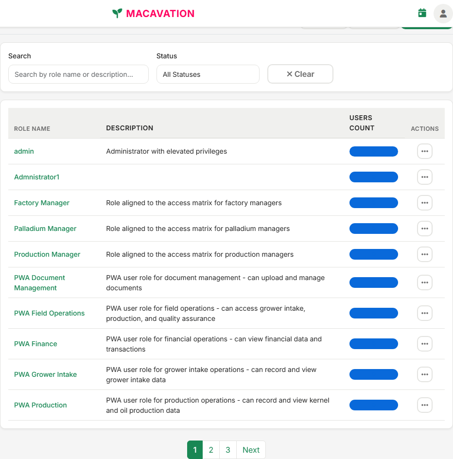
Sales Forecasting (module)
Demand and forecasting inputs for planning.
Maintain forecast versions planners compare to production capacity and stock. Coordinate with finance or supply if numbers feed external systems.
How to use this screen
Open Sales forecasting from the menu.
Click New forecast to add a period, product type, quantity, confidence, and status.
Review existing rows in the table; use actions to revise or close versions planners no longer use.
Click Export when supply or finance needs the numbers in Excel.
Align forecast versions with production capacity meetings—do not treat this as the only source of truth if finance maintains a master file.
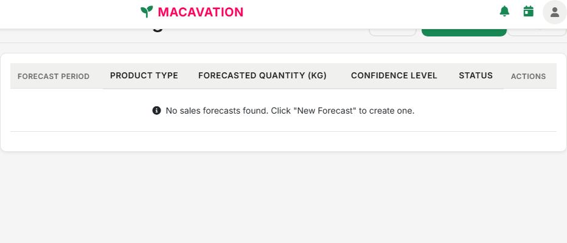
Send To Dispatch (dialog)
Start a kernel dispatch in two steps: choose the customer and collection date, then type how many cartons of each style from each batch. Add a new customer or fix a customer's details on the way.
Open it with Send to Dispatch at the top of Kernel pipeline › 5. Dispatch and Sales. You only see that button if your role may create dispatches. The dialog title shows Step 1 of 2, then Step 2 of 2.
Send stock to dispatch
Step 1: choose the Customer (required). Their details show under Customer details and come from Contacts.
Choose the Planned Collection Date (required).
Press Select Stock →. If the customer or date is missing you are asked to select it.
Step 2: the grid lists batches with Best Before and Time Left, oldest first, and a column for each style (SP, 0, 1, 1S, 4L, 5, 6, 7/8, Butter HO, Butter LO). Type whole cartons in the box for each batch and style. The kg show under each entry at 11.34 kg per carton.
A box turns red if you type more than is left ("max 20") or anything but a whole number. The Positive release row shows batches still at the lab: "At the lab. Can't be sent yet."
Check the basket and the Total (cartons and kg). Press Send Dispatch Order. It stays greyed out until at least one carton is chosen.
The dispatch then appears under Open dispatches as step 1, Dispatch created, and waits for picking.
Customers
Customer not in the list: press the + next to Customer. Enter the Company name (required), and if you like Province, Area / City, Contact name and Notes, then press Add customer.
Wrong phone, email, VAT or address: press Edit in Customer details, change the fields and press Save to Contacts. This saves straight to Contacts, not just to this dispatch. An email that does not look right is refused.
Fix a mistake
Wrong cartons before sending: change the box, or press ← Back to change the customer or date. Cancel closes without sending anything.
Already sent: on the Dispatch and Sales screen open the row's Actions menu and press Edit. There you can change the buyer, date and cartons, or press Send back to stock for a line.
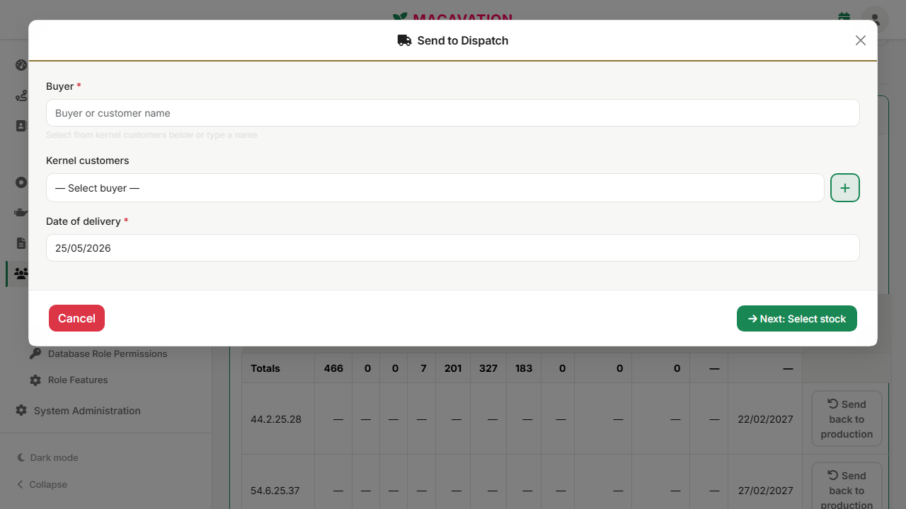
Send To Dispatch Oil (dialog)
Dialog opened from the related module. Complete required fields (marked), then save. Use Cancel or the close button to dismiss without saving.
How to use this screen
Open from oil stock when sending finished oil/protein lots toward oil dispatch.
Verify lot numbers, best-before, and quantities against the warehouse.
Submit; complete oil dispatch forms from the dispatch module.
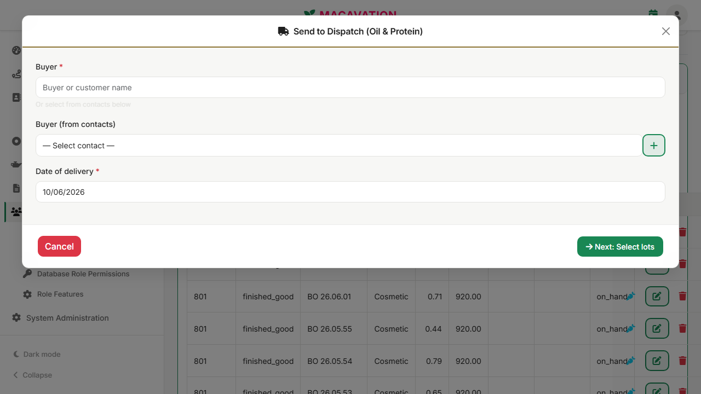
Silo Holding (module)
Put received bags into silos, open a silo to start cracking, and stop it to log the run. Also how to fix a mistake: undo a bag put in the wrong silo, cancel a silo opened by mistake, undo a cracking run, or correct its times.
Open Kernel pipeline › 2. Silo Holding from the sidebar. The screen has three parts: Allocate bags (folds away to one line), Silos (one card per silo) and the Cracking log. Since 26 Oct 2026 the cracking log is the record of kg cracked: each finished run fills in the batch cracking sheet automatically.
Put bags into a silo
Open Allocate bags (press Show). Bags appear here once a delivery is released to production on Receiving.
Pick the Batch. Batches with bags still to allocate are listed first; batches already fully in a silo are listed under All bags in a silo.
Tick the bags going in, or Select all. A bag marked est. has an estimated weight from New Delivery: type its real weight in the Real kg box. Any other bag can be re-weighed by typing in its Re-weigh kg box; leave it empty to keep the weight on record.
Choose the silo in Into silo. A silo only takes one batch at a time, so silos holding a different batch are greyed out until they are cracked empty. A silo can be filled past its capacity; the list shows how far over it is.
Press Allocate selected. Enter the kg taken out at the pre-sizer for those bags (0 if none) and the weights of any bags being weighed, then save.
Crack a silo
On the silo card press Open silo ▶. The start time fills in with the time now; change it if the silo was opened earlier. The card turns green, shows Cracking and a running timer.
When cracking stops, press Stop cracking ■. Check the start and stop date and time, then enter the kg left in the silo (an estimate is fine) and press Save, or press Silo is empty.
The run appears in the Cracking log with the kg cracked, kg left, time and kg per hour. A run longer than 16 hours is flagged Check times, because it usually means the stop date was left on the next day.
Fix a mistake
Bag put in the wrong silo, the wrong batch, or with the wrong pre-sizer kg: open Allocate bags, pick the batch, and open the Allocated list under the bags (for example "Allocated: 12 bags · 5,400.00 kg"). Press Undo next to each wrong bag. The bag goes back to "still to allocate" and the pre-sizer figure is worked out again. Then allocate it again to the right silo. Undo is one bag at a time.
No Undo next to a bag, or Undo says "cracking from it has already started": some of that bag has already been logged as cracked, so it can't be taken back out of the silo. Undo the cracking runs on that silo first (below, latest run first). Once no run has taken anything from the bag, its Undo works again.
Silo opened by mistake: while it is cracking, press Opened by mistake on the silo card. The run is removed as if the silo was never opened; the bags stay in the silo and nothing is counted as cracked.
Wrong start or stop time on a finished run: in the Cracking log press Edit times on the run, correct the dates and times, and press Save. The run is marked time changed.
Run logged by mistake, or wrong kg left: in the Cracking log press Edit times, then Undo this run. The kg cracked go back into the silo and come off the cracking log and the batch cracking sheet. Only the latest run on a silo can be undone (undo later runs first), and not while that silo is open: stop it or use Opened by mistake first. To fix the kg left, undo the run, then open and stop the silo again with the right figure and times.
Finding things
Show a batch: press a batch button above the silos to highlight every silo it is in and see how many kg are still in silos.
Cracking log: switch between Day and Week, and use the arrows, the date box or Today / This week to move around. The week view shows a total per day.
Calendar: the calendar button at the top shows the bags allocated and silos cracked each day. Press Refresh to load the latest.
Pre-sizer tally: shows each allocation's removed pre-sizer kg for the batch. Once the last bag is in, the total becomes the batch's removed pre-sizer figure on the job card and batch history.
Kernel Pipeline Settings
Change the rules the kernel screens use: sample limits, kg per crate, bag weighing and numbering, shelf life, daily target, lab days, transport companies, silo and storage sizes, kernel prices and stock alerts. Each card has its own Save button.
Open Kernel pipeline › Kernel Pipeline Settings. The tabs you see depend on your role. Intake & quality and Plant need permission to edit settings, and without it you see "Nothing here for your role" unless you have Prices or Stock alerts. Press Save on a card to save only that card. "Nothing to save." means you changed nothing.
Intake & quality tab
Sample spec limits: for each test choose Better when Lower or Higher, then Green up to and Yellow up to. Above that is Red. (With Higher, they read "green from" and "yellow from".) A blank test shows no colour. The green limit also decides whether a delivery moves straight to Ready to crack or waits under Needs a decision.
Kg per crate: for Washing and Sorting crates, so kg fill in as crates times this. Leave blank to type kg by hand.
Batch numbers & bags:Bag numbering when a bag is deleted is Keep numbers fixed (recommended) or Renumber 1..N. A table of roles chooses who may edit a batch number (super user and admin always can).
Bag weights:Where are bags weighed? At New delivery (every bag needs a weight) or At the silo (bags without a weight get an estimate, marked est.). Then choose whether an estimated bag can go into a silo with a warning or must be weighed first. This only affects deliveries booked in from now on.
Shelf life:Kernel best before in months (1 to 60) for new batches, and the Time Left colours on Kernel Stock: green when more than a number of months, yellow from a number up to green, red below yellow or when expired. Existing best-before dates do not change.
Plant tab
Daily production target: kg of nut in shell cracked per working day (1 to 100,000). The 17:30 WhatsApp production report compares the day to it. Blank means no target.
Positive release (lab):Expected days at the lab (1 to 60), counted as Working days (Monday to Friday) or Calendar days. Past this a batch shows as late.
Transport: the lists of transport companies and transport types used when booking in a truck. Type a name and press Add. Rename, Deactivate or Reactivate an existing one.
Silo capacity: kg for Silo 1 to Silo 12. Storage area capacity: kg per area, used for the fill bars on Receiving. Blank means no limit.
Prices and Stock alerts tabs
Prices: the price per kg for each kernel style. A dispatch basket is valued from these. Needs the permission to view kernel prices.
Stock alerts: red-flag levels for kernel and oil stock on hand, with Add Rule and Refresh. Rules are checked when somebody opens Stock Management, not on a timer.
Fix a mistake
Change the value and press that card's Save again. The message says what is wrong, for example "Limits must be numbers of 0 or more" or "Silo capacity must be more than 0".
Changes to shelf life and bag weighing apply to new deliveries and batches only. Old batches keep what they had.
A transport company or type cannot be deleted here. Deactivate it, and Reactivate it if you need it back.
Stock Alert Rules (module)
Module Stock Alert Rules (module). Available from the navigation menu when your role includes access. The screenshot below shows the live screen layout.
Typical use: open the screen from the menu when your role allows it, narrow the list with filters, then use toolbar buttons or row actions to add, edit, export, or move work forward. The screenshot shows the usual layout.
How to use this screen
Open this module from the sidebar when your role includes access.
Use search, filters, and Clear (if shown) to find the rows you need.
Use toolbar buttons (add, export, refresh) for actions that create new records or refresh the whole list.
Use row actions or links inside each row to open detail, edit, or the next step in the workflow.
Stock Management (module)
Warehouse views for kernel and oil/protein stock; filters, export, send to dispatch, and oil lot management.
Confirm location and product filters before transactions. Send-to-dispatch and oil-lot actions should only run when physical stock matches the system.
How to use this screen
Open Stock management; note whether you are on the Kernel or Oil & protein stream (subtitle and filters adapt).
For the main stock table: use Search, Status, Product type, and Location (warehouse section); click Clear to reset.
On Kernel batch journey: use By style / Weekly / Overview; in Adjust Stock you can enter cartons or kg and the system calculates boxes before saving. Use Send to Dispatch only when physical stock matches the system.
For oil: add or import oil lots (e.g. from Excel) and monitor days-remaining from best-before where shown; use export when you need a file copy.
For shell waste lots: use Movement history from the row menu to see all movements (created, adjusted, dispatched, written off) for a lot, with timestamps, quantities, and references.
Use Import historical only for the controlled kernel historical load your admin approved—never as a substitute for normal intake and production postings.
Click History (top right) to see who changed stock on hand and when—stock in, dispatches out and adjustments, across kernel, oil & protein and shell waste. Filter by stock type, kind of change, date range, or search a batch, style, person or reason. Quantities shown are the change to on hand, so a negative figure means stock left. Rows marked with an information icon were reconstructed from existing records when the audit trail was introduced: their time is approximate and the person was never recorded. This is the audit trail—for the dashboard's stock-level chart see Stock on hand history below.
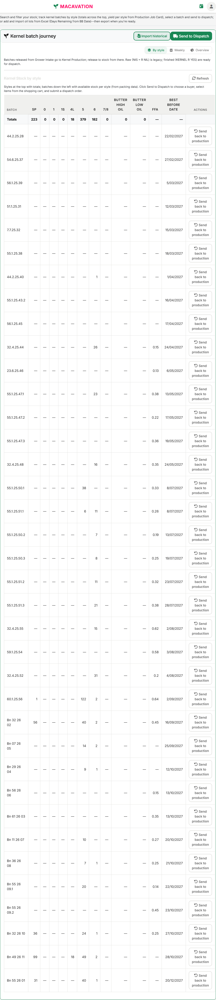
Stock on hand history
Multi-line chart on the Executive dashboard showing how finished stock levels changed over time, with one coloured line per kernel style or oil stream.
Use the Kernel / Oil toggle to switch product type. Each style or stream has its own colour (like a share-price chart). Range buttons (1M, 3M, 6M, 1Y, All) zoom the time window. Hover a date to see all series at that point; click legend items to hide or show individual lines.
How to use this screen
Open Dashboard and expand Trends & forecasts.
Find Stock on hand history below Production Trends.
Toggle Kernel to see kg on hand per kernel style (SP, 0, 1, 1S, 4L, 5, 6, 7/8, butter grades).
Toggle Oil to see kg on hand for food grade oil, cosmetic oil, and protein powder.
Use range buttons to focus on the last month, quarter, year, or full available history.
Click Customize on the dashboard if the chart is hidden—enable Stock on hand history.
Raw material runway forecast
Chart on the Executive dashboard answering one question: when is the plant predicted to run out of nut-in-shell to crack? The solid line is what actually happened up to today; the dashed line is the projection ahead.
The vertical axis is kilograms of nut-in-shell that have not yet been put into production. That is everything awaiting production, plus the portion of batches currently in production that has not been cracked yet. Scheduled grower intake is not counted in today's figure—it appears as an upward step on the day it is due, so you can see deliveries arriving. Dashed markers show Today and the predicted Run-out.
Setting the depletion rate
The forecast needs to know how fast raw material is consumed, and that is a judgement call rather than something the system can safely guess. Press Depletion rate and pick a month whose cracking figures you trust. The rate becomes that month's total kilograms cracked divided by the number of days in the month, and it updates automatically if that month's records are later completed.
The Capture column shows how many of the month's recorded cracking days actually have a tonnage against them. This matters more than any other number in the dialog: a month where only a quarter of days were captured will understate consumption badly and make the runway look far longer than it is. Prefer a month with high capture. You can also enter kilograms per day directly, which overrides the chosen month—use that when you know the plant's real throughput.
Until a rate is set the chart deliberately shows stock on hand but no projection, rather than inventing a run-out date. The rate is shared: whoever sets it, everyone sees it.
How to use this screen
Open Dashboard and expand Trends & forecasts.
Find Raw material runway forecast.
Press Depletion rate and choose a month with a high capture percentage, or type a kilograms-per-day figure.
Read the headline: predicted run-out date, days remaining, and kilograms on hand.
Use the range buttons (1M, 3M, 6M, 1Y, All) to change how much history is shown. The projection always runs to run-out.
Hover any day to see intake and cracked kilograms for that day.
Check any warnings under the chart—they flag missing scheduled intake and gaps in cracking capture that make the projection less reliable.
Click Customize on the dashboard if the chart is hidden—enable Raw material runway forecast (NIS).
Stock Take (dialog)
Dialog opened from the related module. Complete required fields (marked), then save. Use Cancel or the close button to dismiss without saving.
How to use this screen
Open from stock management when running a stock-take or adjustment workflow.
Count physically first, then enter counted quantities; explain variances in notes if required.
Submit for approval if your workflow includes a reviewer.
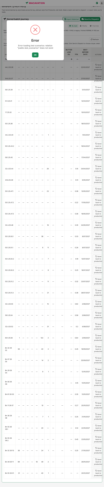
Supplier Intake (module)
Oil & protein intake: supplier oil batches and receiver checklists tied to CRM suppliers.
Register supplier oil batches and receiver checklists; they must tie to CRM suppliers. Downstream stock and production consume these records.
How to use this screen
Open Supplier intake from the menu.
Use search, status filter, and Clear; choose Board, Table, Weekly, or Overview from the view toggle.
Start new oil-side deliveries with Receiver checklist; that creates the batch you will track through sample tests.
Complete sample tests from the card/table when the UI enables them; status moves toward ready for oil production.
Use Export when you need to share the current intake list outside the app.
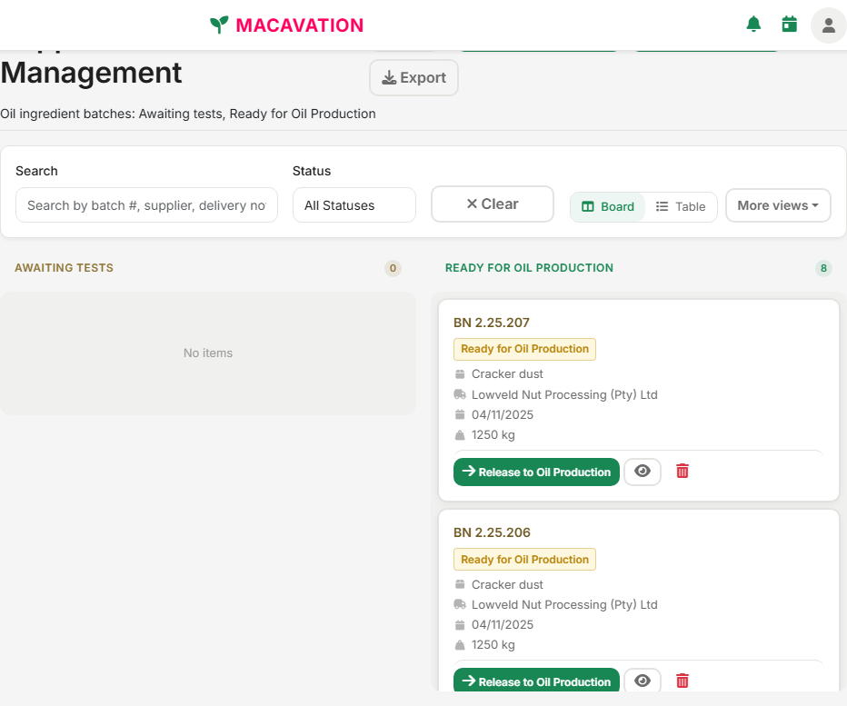
Supplier Intake Adjust Stock (dialog)
Dialog opened from the related module. Complete required fields (marked), then save. Use Cancel or the close button to dismiss without saving.
How to use this screen
Open this dialog from the parent screen (toolbar, card, or row action)—not from the sidebar on its own.
Read the title and any short instructions; required fields are usually marked (e.g. with *).
Fill the form using dropdowns, dates, and lookups where offered so values match what the database expects.
Click the primary Save / Submit button to apply changes, or Cancel / close (×) to discard.
If validation errors appear, fix the highlighted fields and submit again before leaving the dialog.
Supplier Oil Batch (dialog)
Dialog opened from the related module. Complete required fields (marked), then save. Use Cancel or the close button to dismiss without saving.
How to use this screen
Open from supplier intake row actions when editing batch header details.
Adjust only fields your role is allowed to change after receiving; some values may be locked post-test.
Save and confirm status still matches physical stock before releasing to production.
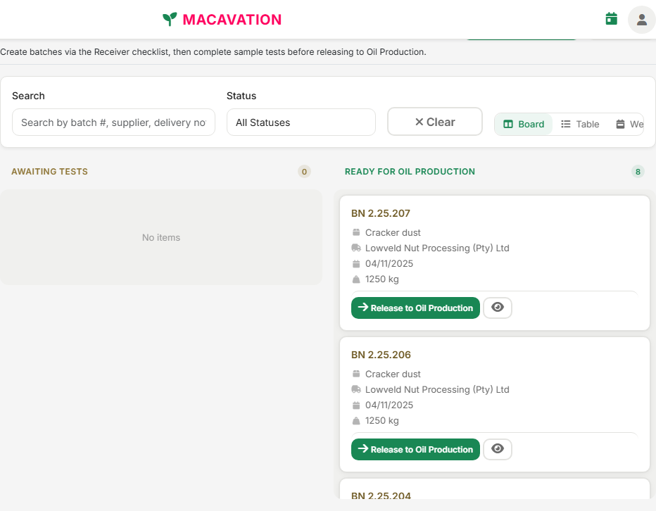
Supplier Receiver Checklist (dialog)
Dialog opened from the related module. Complete required fields (marked), then save. Use Cancel or the close button to dismiss without saving.
How to use this screen
Open from supplier intake via Receiver checklist to start a new supplier oil delivery.
Capture the delivery note and supplier from CRM, then answer every vehicle & receiving check. A bad answer opens What was wrong and what action was taken? (required) and photos; a dirty vehicle or pests raises an alert.
Add the bags: type how many next to + Add, then fill in each bag's description, batch #, weight (kg) and manufactured date. New rows copy the last row (batch numbered on) with the weight left blank; rows with no weight are left out when you save.
Submit to create the batch that will appear on the board for sample testing and release to oil production.
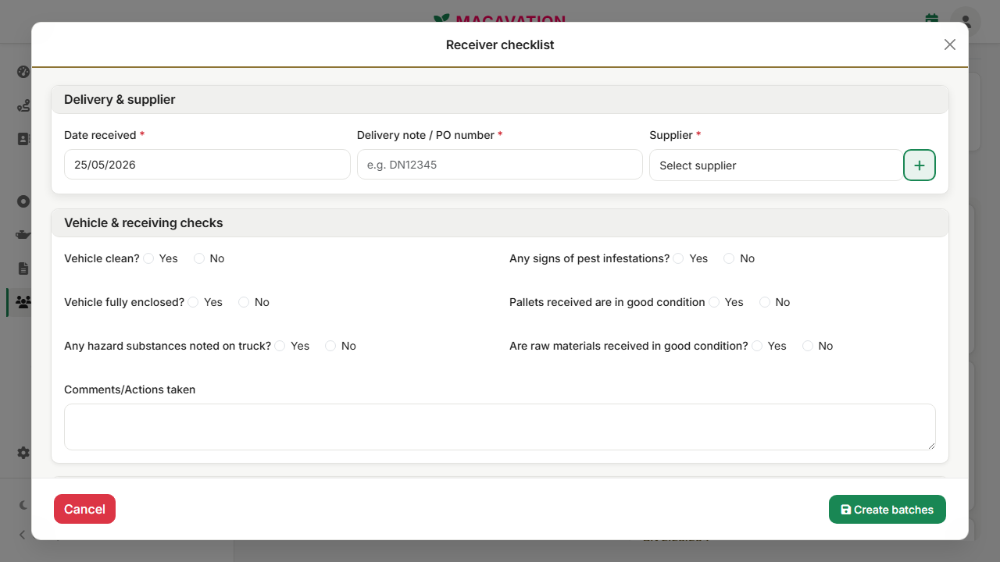
Supply chain & process flow
Interactive overview of kernel and oil streams plus shared modules. Click any box in the diagram to open that help topic. Read-only — create and edit batches in the operational modules.
Use the diagram to orient new staff: kernel stream (left), oil stream (middle), and shared tools (bottom). Follow links into live modules for day-to-day work.
How to use this screen
Open Supply chain & process flow when you need the big picture before diving into a single module.
Click a box in the diagram to jump to that module’s help topic (grower intake, kernel production, stock, dispatch, CRM, and more).
Trace the kernel stream (top row) and oil & protein stream (second row) from intake through dispatch.
Use shared modules at the bottom (CRM, Quality, Documents, User & access) for data that supports both streams.
This page is read-only for orientation—create and edit batches only inside the operational modules.
User (dialog)
Dialog opened from the related module. Complete required fields (marked), then save. Use Cancel or the close button to dismiss without saving.
How to use this screen
Open from Users when editing profile, role, or activation state.
Avoid shared accounts; use reset-password instead of telling another person the password.
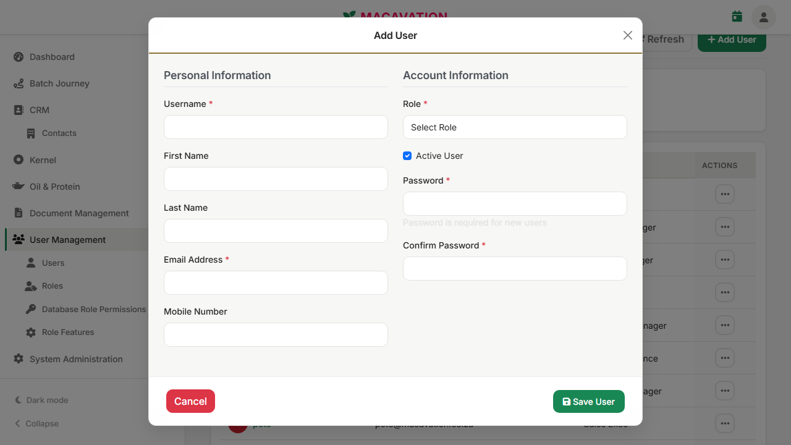
User & access — People
People (User & access) — accounts, role filter, and add user.
Filter the users grid and use Add user or Edit user; optional password on save matches the standalone Users screen.
How to use this screen
Open User & access from the sidebar (under the user-access group).
Stay on the People tab.
Use the role filter or search the grid as needed.
Use Add User or row Edit user — editing supports optional password change like the standalone Users screen.
Saved changes apply on next login or when the session refreshes features.
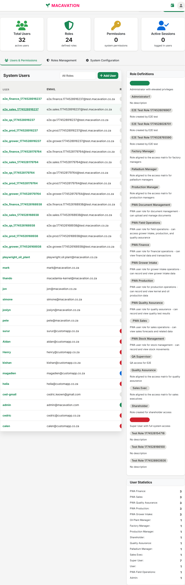
User & access — Roles & modules
Roles & modules (User & access) — full-width roles list; use Customize for both the sidebar modules and the database function permissions inside each module.
Each row has Edit role (name and description only) and Customize. In Customize, the On tick shows the module in the sidebar, and expanding a module reveals its database permissions (Supabase functions) with their own tick boxes. Click a row (outside the buttons) to highlight it. Module names match the sidebar labels you assign to users, listed in the same order as the sidebar; the Key column is the technical route id.
How to use this screen
Open User & access → Roles & modules tab.
Use Customize on a role to open the dialog; the On tick controls sidebar visibility (this matches the former Role Features screen).
Expand a module (the database permissions button on its row) to grant or revoke the individual Supabase functions the role may run; toggle cautiously and follow least privilege.
Permissions that are not tied to a single module appear under Other / shared at the bottom of the list.
Use Edit role when you only need to change the role name or description.
Troubleshooting
Each role is independent. Turning a module off for one role does not share or unlink grants across roles; each role has its own database rows.
Wait until Customize shows Loading… has finished before ticking modules — toggling while data is still loading can save against the wrong role.
If User & access disappears from your sidebar after you edited a different role, sign out and back in (or refresh the page). Your role may still have the grant; only your browser menu cache was cleared.
If a role truly lost a module, reopen Customize for that role and turn the module On again, or ask a super user to restore it.
User & access — System
System (User & access) — reserved for environment and configuration when your deployment exposes it.
Record values before changing anything that affects integrations; involve vendor support for risky reversals.
How to use this screen
Open User & access → System tab.
Read any guidance shown on the tab; many builds keep this as a placeholder until environment tools ship.
Record current values before changing integration or environment fields.
Verify behaviour in a non-critical module before announcing changes broadly.
User & access — Feedback & Issues
Feedback & Issues (User & access) — admin register for defects, enhancements, new features, and other feedback.
Use type cards and filters to find items; create feedback with New feedback; resolve or delete from the row actions menu.
How to use this screen
Open User & access → Feedback & Issues.
Optionally click a type card (Defects, Enhancements, New Features, Other) to filter the register.
Use severity and status filters, then New feedback to file an item.
From Actions: View, Edit, Resolve (open items), or Delete.
Users (module)
Create and maintain portal users, passwords, and assignments.
Create users with correct roles from the start; password resets and deactivation are safer than sharing accounts. Changes apply on next login.
How to use this screen
Open the standalone Users route if your role still exposes it, or use User & access → People for the same workflows in the hub.
Search and filter the grid; click Add user (or equivalent) for a new login.
Assign the correct role immediately; fixing role mistakes later is harder than setting them at creation.
Use password reset flows instead of sharing credentials between people.
Deactivate leavers; permission changes apply on next login in most configurations.
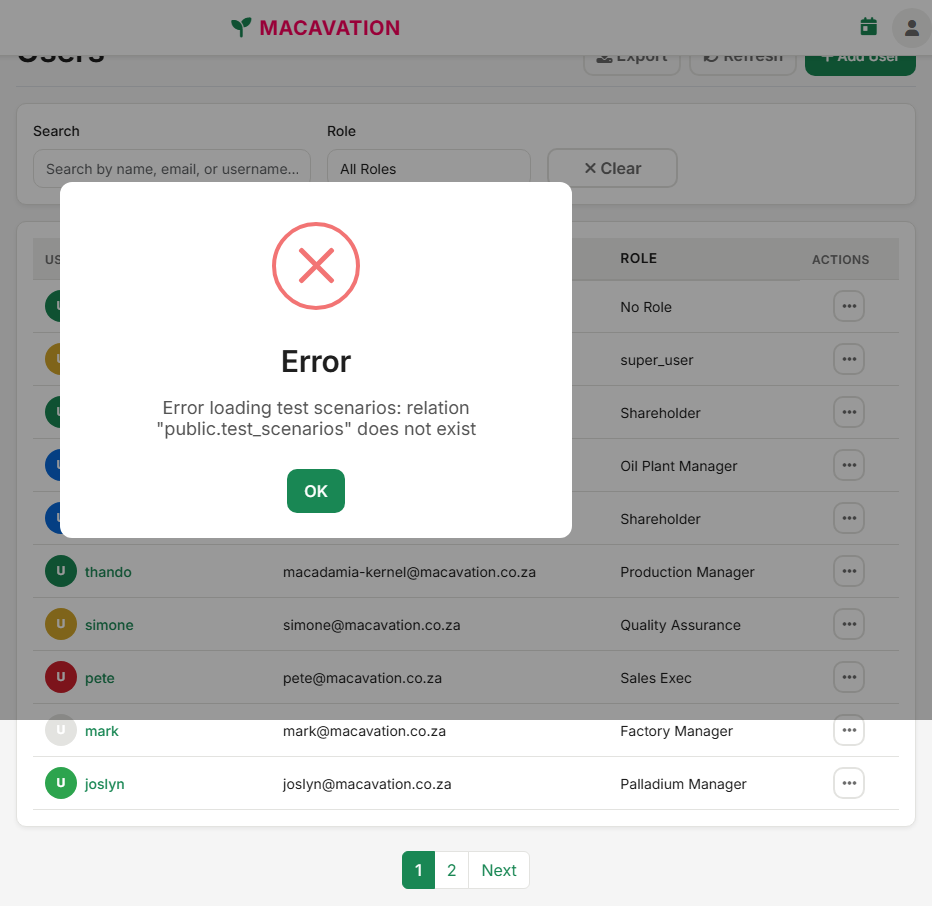
Portal Guide (Mac) and Idle Mac
Mac is the Macavation guide character — a friendly macadamia kernel who helps you find how-to answers in this user guide, and can optionally appear as a light ambient animation when you are idle.
Portal Guide (chat) is the how-to assistant. Idle Mac is a separate, optional decoration and stays off unless you turn it on.
Portal Guide chat
Click the circular Mac face button at the bottom-right of the Web Portal.
Ask how-to questions about the portal (for example how to receive grower intake or dispatch kernel).
Use citation buttons in Mac’s replies to jump to the matching section of this guide.
Use nav chips (when shown) to open the related module. Press Esc or the close control to dismiss the rail.
Idle Mac (optional)
Idle Mac is off by default so it never interrupts demos or focused work.
Open your profile menu → Idle Mac to turn it on, set idle/interval seconds, and choose which animation plays (or Random).
When enabled, Mac may briefly glide, peek up from the bottom, ride in a cart pulled by a tractor, drop under a leaf canopy, or rise in cream/oil droplets after you have been inactive.
Any mouse, keyboard, or scroll activity makes Mac leave immediately.
Opening Portal Guide pauses Idle Mac; closing the rail allows it again.
Click Turn off on the overlay to disable Idle Mac and keep it off (stored in your browser).
Idle Mac respects prefers-reduced-motion and will not play ambient animations when that setting is on.